Every GORM operation starts from two decisions: how your Go struct maps to a database table, and how your connection pool behaves under load. Get either wrong and the symptoms — silent data corruption, connection exhaustion, slow queries — surface only in production under traffic.
GORM Model
A GORM Model represents a Go struct mapped directly to a database table. GORM implements conventions (naming rules) to infer table names, column names, and primary keys automatically.
Conventions
| Convention | Detail | Example |
|---|---|---|
| Primary Key | A field named ID acts as the PK by default | ID uint |
| Table Name | Converts the struct name to snakecase and makes it plural | User → users |
| Column Name | Converts the field name to snakecase | CreatedAt → createdat |
| Timestamps | GORM tracks CreatedAt and UpdatedAt fields automatically | time.Time |
| Soft Delete | Including DeletedAt (gorm.DeletedAt) flags rows as deleted instead of executing hard deletes | gorm:"index" |
gorm.Model
GORM provides the gorm.Model struct containing four standard fields:
``go
type Model struct {
ID uint gorm:"primaryKey"
CreatedAt time.Time
UpdatedAt time.Time
DeletedAt gorm.DeletedAt gorm:"index"
}
`
Critical GORM Tags
| Tag | Purpose | Example |
|---|---|---|
primaryKey | Marks the field as a primary key | gorm:"primaryKey" |
column | Specifies a custom column name | gorm:"column:username" |
type | Specifies a custom column data type | gorm:"type:varchar(100)" |
size | Defines the maximum column size | gorm:"size:256" |
not null | Enforces the NOT NULL constraint | gorm:"not null" |
uniqueIndex | Creates a unique index | gorm:"uniqueIndex" |
index | Creates a standard index | gorm:"index" |
default | Specifies a default column value | gorm:"default:0" |
embedded | Embeds the struct fields into the parent table | gorm:"embedded" |
embeddedPrefix | Adds a prefix to embedded field names | gorm:"embedded;embeddedPrefix:addr_" |
- | Ignores the field entirely | gorm:"-" |
<-:create | Permits write operations only during record creation | gorm:"<-:create" |
-> | Sets the field to read-only | gorm:"->" |
Failure Modes
| Failure | Root Cause | Fix |
|---|---|---|
| Connection leak | Forgetting to configure the connection pool | Configure SetMaxOpenConns and SetMaxIdleConns |
| Slow queries | Missing indexes | Add gorm:"index" to frequently queried fields |
| Silent errors | GORM does not trigger panics by default | Check .Error for every operation |
These failure modes are common. However, a trap exists: connection leaks remain hidden until the system experiences high load, and running AutoMigrate in production drops columns without explicit warnings. This trap manifests inside the PITFALLS section.
Mã nguồn & Các ví dụ minh họa
*gorm.DB variable while retaining connection pool controls.
Approach: Open the connection using postgres.Open, extract the underlying sql.DB object, and establish the minimum pool parameters.
Example: A standard CRUD application using a single PostgreSQL instance demands connection verification and active SQL logging capabilities.
Complexity: BasicResults:
- PostgreSQL connection established with bounded pool (25 open / 10 idle).
- SQL logger active — every generated query visible during development.
Takeaway:
- Connection pools are not optional: without
SetMaxOpenConns, GORM opens unlimited connections and exhausts the DB under load. - Utilize
logger.Infoin development andlogger.Silentin production. - Enabling
SkipDefaultTransaction: trueimproves write performance by roughly 30%.
package main
import (
"fmt"
"log"
"time"
"gorm.io/driver/postgres"
"gorm.io/gorm"
"gorm.io/gorm/logger"
)
func main() {
// ━━━━━━━━━━━━━━━━━━━━━━━━━━━━━━━━━━━━━━━━━
// PostgreSQL DSN (Data Source Name)
// Format: host=... user=... password=... dbname=... port=... sslmode=...
// ━━━━━━━━━━━━━━━━━━━━━━━━━━━━━━━━━━━━━━━━━
dsn := "host=localhost user=postgres password=postgres dbname=myapp port=5432 sslmode=disable TimeZone=Asia/Ho_Chi_Minh"
db, err := gorm.Open(postgres.Open(dsn), &gorm.Config{
// ━━━ Logger: show generated SQL queries ━━━
Logger: logger.Default.LogMode(logger.Info), // Info logs all SQL output
// Switch to logger.Silent for production environments
// ━━━ Disable default transactions for performance ━━━
// GORM wraps every write operation within a transaction by default
// Disable this setting if you manage transactions manually
// SkipDefaultTransaction: true,
// ━━━ Disable auto-pluralized table names ━━━
// NamingStrategy: schema.NamingStrategy{
// SingularTable: true, // generates 'user' instead of 'users'
// },
})
if err != nil {
log.Fatal("Failed to connect database:", err)
}
// ━━━━━━━━━━━━━━━━━━━━━━━━━━━━━━━━━━━━━━━━━
// Connection Pool Configuration
// CRITICAL for production systems — prevents connection resource leaks
// ━━━━━━━━━━━━━━━━━━━━━━━━━━━━━━━━━━━━━━━━━
sqlDB, err := db.DB()
if err != nil {
log.Fatal("Failed to get underlying DB:", err)
}
sqlDB.SetMaxOpenConns(25) // Cap concurrent DB connections to prevent pool exhaustion
sqlDB.SetMaxIdleConns(10) // Keep 10 warm connections ready for burst traffic
sqlDB.SetConnMaxLifetime(5 * time.Minute) // Recycle connections to avoid stale TCP sessions
// ━━━ Verify database connection ━━━
if err := sqlDB.Ping(); err != nil {
log.Fatal("Failed to ping database:", err)
}
fmt.Println("✅ Connected to PostgreSQL!")
}gorm.Model, tag constraints, schema associations, and embedded structs at the core model layer.
Example: Define User, Order, Product, and Category featuring primary keys, unique indexes, nullable pointers, and many-to-many associations.
Complexity: IntermediateResults:
- Models define PKs, FKs, indexes, unique constraints, and defaults declaratively via struct tags.
- Embedded struct (Address) flattens into the parent table — no separate
addressestable created. - Associations wired: Has One (Profile), Has Many (Orders), Many2Many (Products ↔ Orders).
Takeaway:
- Pointer fields (
string,time.Time) map toNULL-able columns. Non-pointer fields default to Go zero values. gorm.ModelprovidesID,CreatedAt,UpdatedAt,DeletedAtautomatically.- Custom
TableName()overrides convention — use it when integrating with legacy schemas. - Go zero values (
0,"",false) cause silent update issues. Usemap[string]interface{}for partial updates.
package models
import (
"time"
"gorm.io/gorm"
)
// ━━━━━━━━━━━━━━━━━━━━━━━━━━━━━━━━━━━━━━━━━
// User: Embed gorm.Model to automatically generate ID, CreatedAt, UpdatedAt, DeletedAt fields
// ━━━━━━━━━━━━━━━━━━━━━━━━━━━━━━━━━━━━━━━━━
type User struct {
gorm.Model // ID, CreatedAt, UpdatedAt, DeletedAt
Name string `gorm:"size:100;not null"` // VARCHAR(100) NOT NULL
Email string `gorm:"uniqueIndex;size:255"` // UNIQUE INDEX
Phone *string `gorm:"size:15"` // Pointer establishes a NULLABLE column
Age uint8 `gorm:"default:0"` // DEFAULT 0
Role string `gorm:"type:varchar(20);default:'user'"` // Custom native type featuring a default
IsActive bool `gorm:"default:true;index"` // INDEX for accelerated filter scans
// ━━━ Associations ━━━
Profile Profile // Has One relationship definition
Orders []Order // Has Many relationship definition
}
// ━━━━━━━━━━━━━━━━━━━━━━━━━━━━━━━━━━━━━━━━━
// Profile: Belongs To relationship connecting User (1:1 constraint)
// ━━━━━━━━━━━━━━━━━━━━━━━━━━━━━━━━━━━━━━━━━
type Profile struct {
gorm.Model
UserID uint `gorm:"uniqueIndex"` // Foreign Key → users.id mapping, strictly unique (1:1)
Bio string `gorm:"type:text"`
Avatar string `gorm:"size:500"`
}
// ━━━━━━━━━━━━━━━━━━━━━━━━━━━━━━━━━━━━━━━━━
// Order: Belongs To relationship connecting User (1:N constraint)
// ━━━━━━━━━━━━━━━━━━━━━━━━━━━━━━━━━━━━━━━━━
type Order struct {
gorm.Model
UserID uint `gorm:"index;not null"` // Foreign Key → users.id mapping
OrderNumber string `gorm:"uniqueIndex;size:50"`
Status string `gorm:"type:varchar(20);default:'pending';index"`
TotalAmount float64 `gorm:"type:decimal(12,2);not null"`
// ━━━ Embedded struct: aggregates address sub-fields ━━━
Address Address `gorm:"embedded;embeddedPrefix:shipping_"`
// ━━━ Many2Many relationship mapping ━━━
Products []Product `gorm:"many2many:order_products;"`
// ━━━ Custom Timestamp properties ━━━
PaidAt *time.Time // Nullable field establishing status — nil indicates pending transaction
}
// ━━━━━━━━━━━━━━━━━━━━━━━━━━━━━━━━━━━━━━━━━
// Address: Embedded struct logic (prevents generating an isolated database table)
// These fields flatten directly into the primary parent table structure
// ━━━━━━━━━━━━━━━━━━━━━━━━━━━━━━━━━━━━━━━━━
type Address struct {
Street string `gorm:"size:255"`
City string `gorm:"size:100"`
Country string `gorm:"size:50"`
ZipCode string `gorm:"size:10"`
}
// ━━━━━━━━━━━━━━━━━━━━━━━━━━━━━━━━━━━━━━━━━
// Product: Many2Many bridging logic targeting the primary Order struct
// ━━━━━━━━━━━━━━━━━━━━━━━━━━━━━━━━━━━━━━━━━
type Product struct {
gorm.Model
Name string `gorm:"size:200;not null;index"`
Description string `gorm:"type:text"`
Price float64 `gorm:"type:decimal(12,2);not null"`
SKU string `gorm:"uniqueIndex;size:50"`
CategoryID uint `gorm:"index"`
Category Category
Orders []Order `gorm:"many2many:order_products;"`
}
// Category: BelongsTo relationship targeting the primary Product struct
type Category struct {
gorm.Model
Name string `gorm:"size:100;uniqueIndex"`
Slug string `gorm:"size:100;uniqueIndex"`
Products []Product // Has Many relationship mapping
}
// ━━━━━━━━━━━━━━━━━━━━━━━━━━━━━━━━━━━━━━━━━
// Custom Table Name schema override logic
// ━━━━━━━━━━━━━━━━━━━━━━━━━━━━━━━━━━━━━━━━━
func (User) TableName() string {
return "app_users" // Generate a specific table name replacing the basic inferred "users" convention
}AutoMigrate command sequencing models correctly to signal the engine to append necessary fundamental columns and indices.
Example: The primary local development machine builds schemas targeting User, Profile, Order, Product, and Category dynamically.
Complexity: AdvancedResults:
- Tables created matching Go struct definitions. Columns, indexes, and FK constraints applied.
- Existing columns are never dropped — AutoMigrate only adds.
Takeaway:
- AutoMigrate is for development only. In production, use versioned migration tools (golang-migrate, goose) for safe, reversible schema changes.
- AutoMigrate does not delete columns or indexes — it only adds missing ones.
- Model order matters: parent tables (Category) must migrate before child tables (Product → Order) to satisfy FK constraints.
func main() {
// ... (database connection block mirrors Example 1 output)
// ━━━━━━━━━━━━━━━━━━━━━━━━━━━━━━━━━━━━━━━━━
// AutoMigrate sequence creating omitted tables adding required structural columns/indexes
//
// ⚠ AutoMigrate DOES NOT:
// - Delete established core data columns
// - Modify specific operational column types
// - Delete pre-configured table indexes
// → Utilize explicit external migration tools (golang-migrate) implementing production schemas
// ━━━━━━━━━━━━━━━━━━━━━━━━━━━━━━━━━━━━━━━━━
err := db.AutoMigrate(
&User{},
&Profile{},
&Order{},
&Product{},
&Category{},
)
if err != nil {
log.Fatal("Migration failed:", err)
}
fmt.Println("✅ Migration completed!")
// ━━━ Verify table target structures generating properly ━━━
migrator := db.Migrator()
fmt.Println("users exists:", migrator.HasTable(&User{}))
fmt.Println("orders exists:", migrator.HasTable(&Order{}))
}dbresolver plugin processing SQL queries, matching logical route patterns scaling core read traffic against distinct pool properties.
Example: Execute native Create/Update/Delete procedures on the primary while mapping standard Find/First targets to subsequent read-replica boundaries.
Complexity: ExpertResults:
- Automatic read/write splitting: Application code uses
db.Find()anddb.Create()unchanged — routing is transparent. - Load-balanced reads:
RandomPolicydistributesFind/First/Scanacross replicas. - Force primary:
dbresolver.Writeensures read-after-write consistency when replication lag matters. - Transaction safety: All queries inside
db.Transaction()stay on the primary node.
Takeaway:
- Replication lag is real: After a write, an immediate read from a replica may return stale data. Use
dbresolver.Writefor critical read-after-write paths. - Each node gets its own pool: Primary and replicas have independent
MaxOpenConns/MaxIdleConnssettings. - DBResolver is not HA: It does not handle failover. Use PgBouncer or HAProxy for node-level health checks and connection routing.
package database
import (
"fmt"
"log"
"time"
"gorm.io/driver/postgres"
"gorm.io/gorm"
"gorm.io/plugin/dbresolver"
)
// ━━━━━━━━━━━━━━━━━━━━━━━━━━━━━━━━━━━━━━━━━
// DBConfig parameters handling distributed database connection infrastructure scaling routines
// ━━━━━━━━━━━━━━━━━━━━━━━━━━━━━━━━━━━━━━━━━
type DBConfig struct {
PrimaryDSN string // Master node — receives all writes
ReplicaDSNs []string // Follower nodes — serve read queries via round-robin
}
func NewMultiDB(cfg DBConfig) (*gorm.DB, error) {
// ━━━ Fundamental primary target initialization ━━━
db, err := gorm.Open(postgres.Open(cfg.PrimaryDSN), &gorm.Config{
SkipDefaultTransaction: true,
PrepareStmt: true,
})
if err != nil {
return nil, fmt.Errorf("primary connection failed: %w", err)
}
// ━━━━━━━━━━━━━━━━━━━━━━━━━━━━━━━━━━━━━━━━━
// DBResolver plugin — automatic read/write splitting
//
// Sources = Primary (write path): Create, Update, Delete, raw Exec
// Replicas = Distinct followers (read path): Find, First, Last, Scan, raw Query
//
// Policy configuration block dictating balancing rules mapping the Replica pool
// ━━━━━━━━━━━━━━━━━━━━━━━━━━━━━━━━━━━━━━━━━
replicas := make([]gorm.Dialector, len(cfg.ReplicaDSNs))
for i, dsn := range cfg.ReplicaDSNs {
replicas[i] = postgres.Open(dsn)
}
err = db.Use(dbresolver.Register(dbresolver.DBResolverConfig{
Sources: []gorm.Dialector{postgres.Open(cfg.PrimaryDSN)},
Replicas: replicas,
Policy: dbresolver.RandomPolicy{}, // Distribute reads randomly across replicas
}).
SetMaxOpenConns(25).
SetMaxIdleConns(10).
SetConnMaxLifetime(5 * time.Minute).
SetConnMaxIdleTime(1 * time.Minute))
if err != nil {
return nil, fmt.Errorf("dbresolver setup failed: %w", err)
}
log.Printf("✅ Multi-DB connected: 1 primary + %d replicas", len(cfg.ReplicaDSNs))
return db, nil
}
// ━━━━━━━━━━━━━━━━━━━━━━━━━━━━━━━━━━━━━━━━━
// Usage: read/write routing is transparent — application code stays unchanged
// ━━━━━━━━━━━━━━━━━━━━━━━━━━━━━━━━━━━━━━━━━
func example(db *gorm.DB) {
// ━━━ Write → routed to primary ━━━
user := User{Name: "Alice", Email: "alice@example.com"}
db.Create(&user) // → goes to primary automatically
// ━━━ Read → routed to a replica ━━━
var users []User
db.Find(&users) // → goes to a random replica
// ━━━ Force read from primary (read-after-write consistency) ━━━
db.Clauses(dbresolver.Write).First(&user, 1) // → bypasses replica, reads from primary
// ━━━ Transactions always use primary ━━━
db.Transaction(func(tx *gorm.DB) error {
tx.Create(&Order{UserID: user.ID, TotalAmount: 100})
tx.First(&user, user.ID) // ← reads inside a transaction stay on primary
return nil
})
}
func main() {
cfg := DBConfig{
PrimaryDSN: "host=primary.db user=app dbname=myapp port=5432 sslmode=disable",
ReplicaDSNs: []string{
"host=replica1.db user=app dbname=myapp port=5432 sslmode=disable",
"host=replica2.db user=app dbname=myapp port=5432 sslmode=disable",
},
}
db, err := NewMultiDB(cfg)
if err != nil {
log.Fatal(err)
}
example(db)
}Sơ đồ trực quan & Luồng hoạt động (Visual Support)
Figure: Three pillars — Go struct with gorm tags maps to DB table (convention-based naming), connection pool manages MaxOpenConns/MaxIdleConns/ConnMaxLifetime per process, context boundary ensures every query gets timeout/cancellation.
With Models & Connection, the diagram below anchors the mechanism to the execution flow, demonstrating where the scheduler, connection blocking, or infrastructure rollouts dictate the outcome.
GORM Architecture
``text
Go Struct (Model) GORM Engine Database
┌──────────────┐ ┌──────────────────┐ ┌──────────────┐
│ type User │ │ gorm.DB │ │ PostgreSQL │
│ ID uint │◄───▶│ - Model mapping │◄──▶│ users table │
│ Name string│ │ - Query builder │ │ id, name, │
│ Email │ │ - Hooks │ │ email, ... │
└──────────────┘ │ - Transactions │ └──────────────┘
│ - Migrations │
└──────────────────┘
`
Model → Table Mapping
`text
Go Struct Database Table
────────── ──────────────
type User struct { TABLE users (
ID uint id BIGINT PK,
Name string name VARCHAR(255),
Email *string email VARCHAR(255) NULL,
Age uint8 age SMALLINT,
CreatedAt time.Time createdat TIMESTAMP,
UpdatedAt time.Time updatedat TIMESTAMP,
DeletedAt gorm.DeletedAt deleted_at TIMESTAMP NULL INDEX
} )
``
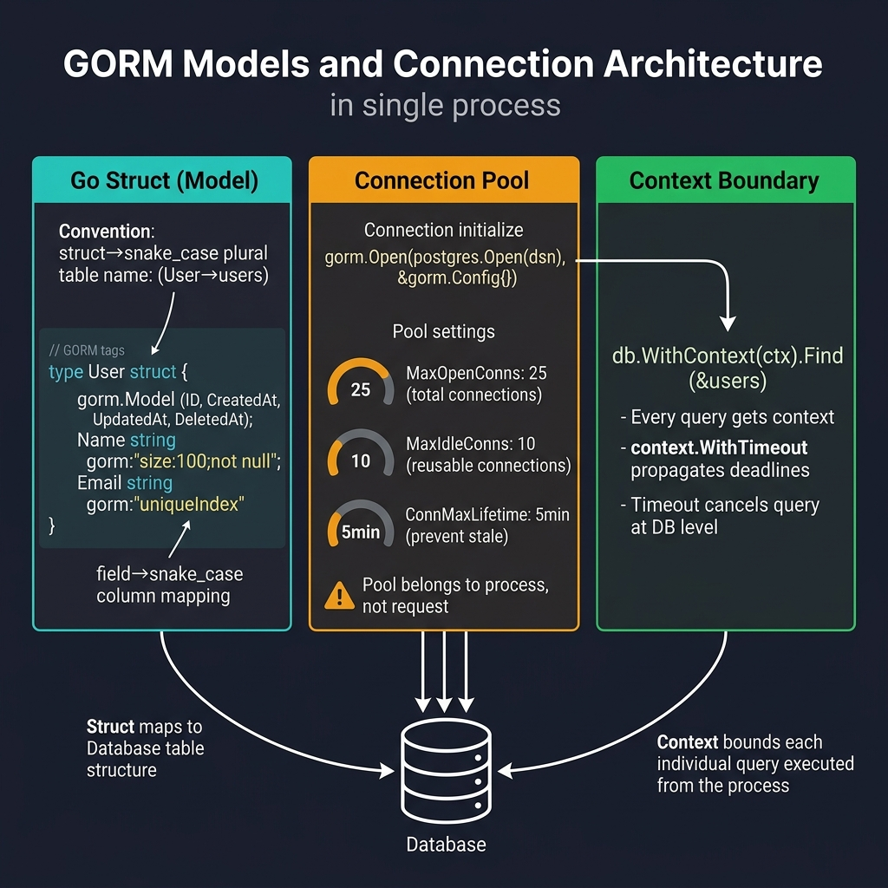
These are the failure modes that survive code review and only surface under production load.
| # | Defect | Impact | Fix |
|---|---|---|---|
| 1 | Missing connection limits | Database failures under system load | Set SetMaxOpenConns(25) and SetMaxIdleConns(10) limits |
| 2 | AutoMigrate in production | Silent schema drift — columns added but never removed | Use versioned migration tools (golang-migrate, goose) for production DDL |
| 3 | Missing indexes | Full table scans on frequently queried columns | Add gorm:"index" to fields used in WHERE, ORDER BY, or JOIN clauses |
| 4 | Zero-value update trap | db.Save(&user) writes 0, "", false to columns you did not intend to change | Use db.Model(&user).Updates(map[string]interface{}{...}) for partial updates |
| 5 | Unintended hard delete | Forgetting gorm.Model removes soft-delete support; rows are physically deleted | Embed gorm.Model or add DeletedAt gorm.DeletedAt explicitly |
| Resource | Link |
|---|---|
| GORM Docs — Models | https://gorm.io/docs/models.html |
| GORM Docs — Connecting | https://gorm.io/docs/connectingtoa_database.html |
| GORM Docs — Conventions | https://gorm.io/docs/conventions.html |
With models and connections in place, these are the natural next steps.
| Extension | When to proceed | Rationale |
|---|---|---|
| 02 — CRUD | After models are defined | Learn Create/Read/Update/Delete patterns and batch operations |
| 03 — Querying | When you need complex WHERE chains, joins, or subqueries | GORM's chainable query builder has subtle gotchas worth learning early |
| 05 — Transactions | Before writing any multi-step business logic | Understand GORM's default transaction wrapping and when to manage your own |
| 12 — Performance | When queries slow down in production | Covers query analysis, N+1 detection, and observability setup |
---
GORM provides two API styles for database operations: the traditional db.Create(&user) interface and the newer generics-based gorm.G[User](db).Create(ctx, &user) API (v1.30+). Both map to the same SQL, but the generics API adds compile-time type safety and first-class context support.
Traditional API vs Generics API
| Characteristic | Traditional API | Generics API (≥ v1.30) |
|---|---|---|
| Syntax Format | db.Create(&user) | gorm.G[User](db).Create(ctx, &user) |
| Type-safe Engine | ❌ (interface{}) | ✅ (generics) |
| Context Integration | Optional | Required (first-class support) |
| Error Handling | Checking the .Error logical field | Returns a standard native error |
| Recommendation | Maintaining legacy codebases | Architecting new native projects |
CRUD Overview
| Operation | Traditional Syntax | Generics Syntax |
|---|---|---|
| Create | db.Create(&user) | gorm.G[User](db).Create(ctx, &user) |
| Read | db.First(&user, id) | gorm.G[User](db).First(ctx) |
| Update | db.Save(&user) | gorm.G[User](db).Updates(ctx, ...) |
| Delete | db.Delete(&user, id) | gorm.G[User](db).Delete(ctx) |
Failure Modes
| Failure | Root Cause | Fix |
|---|---|---|
| Silent operational error | Neglecting to evaluate the mapped .Error parameter. | Implement check: if result.Error != nil |
| Zero-value omission | The ORM engine ignores natively defined struct zero-values during updates. | Utilize map[string]interface{} or explicitly command Select methods. |
| Unconstrained mass execution | Omitting struct WHERE constraints causes full table updates. | Define explicit boolean operators before executing global modifications. |
These failure modes sound simple. However, a trap exists: the ORM engine actively skips struct zero-values, preventing databases from overwriting previous integers to zero or booleans to false. Simultaneously, failing to evaluate the resulting .Error swallows runtime panics.
Mã nguồn & Các ví dụ minh họa
Select, and configure CreateInBatches.
Complexity: Basic&user). Omitting the pointer prevents GORM from mapping the newly generated auto-incrementing Primary Key back to your struct.package main
import (
"fmt"
"log"
"gorm.io/gorm"
)
type User struct {
gorm.Model
Name string `gorm:"size:100;not null"`
Email string `gorm:"uniqueIndex;size:255"`
Age uint8 `gorm:"default:0"`
Phone *string `gorm:"size:15"`
Role string `gorm:"default:'user'"`
}
func demonstrateCreate(db *gorm.DB) {
// ━━━━━━━━━━━━━━━━━━━━━━━━━━━━━━━━━━━━━━━━━
// 1. Create a single database record
// ━━━━━━━━━━━━━━━━━━━━━━━━━━━━━━━━━━━━━━━━━
user := User{Name: "Alice", Email: "alice@example.com", Age: 25}
result := db.Create(&user) // ✅ pass the struct pointer reference
if result.Error != nil {
log.Println("Create failed:", result.Error)
return
}
// ━━━━━━━━━━━━━━━━━━━━━━━━━━━━━━━━━━━━━━━━━
// 2. Batch Insert
// ━━━━━━━━━━━━━━━━━━━━━━━━━━━━━━━━━━━━━━━━━
users := []User{
{Name: "Bob", Email: "bob@example.com", Age: 30},
{Name: "Charlie", Email: "charlie@example.com", Age: 22},
}
db.Create(&users)
// ━━━━━━━━━━━━━━━━━━━━━━━━━━━━━━━━━━━━━━━━━
// 3. Create utilizing explicit Select
// ━━━━━━━━━━━━━━━━━━━━━━━━━━━━━━━━━━━━━━━━━
db.Select("Name", "Email").Create(&User{
Name: "Eve",
Email: "eve@example.com",
Age: 35, // ✅ Ignored — Select limits INSERT to Name and Email only
})
// ━━━━━━━━━━━━━━━━━━━━━━━━━━━━━━━━━━━━━━━━━
// 4. Batch Insert featuring capacity limits
// ━━━━━━━━━━━━━━━━━━━━━━━━━━━━━━━━━━━━━━━━━
var manyUsers []User
for i := range 100 {
manyUsers = append(manyUsers, User{
Name: fmt.Sprintf("User_%d", i),
Email: fmt.Sprintf("user%d@example.com", i),
})
}
db.CreateInBatches(manyUsers, 20)
}First returns ErrRecordNotFound when no row matches because it expects exactly one result. Find returns an empty slice — no error — because an empty result set is valid for a collection query.func demonstrateRead(db *gorm.DB) {
var user User
var users []User
// ━━━━━━━━━━━━━━━━━━━━━━━━━━━━━━━━━━━━━━━━━
// First: retrieves structural singular targets
// ━━━━━━━━━━━━━━━━━━━━━━━━━━━━━━━━━━━━━━━━━
result := db.First(&user)
if result.Error != nil && result.Error == gorm.ErrRecordNotFound {
fmt.Println("User not found!")
}
// ━━━━━━━━━━━━━━━━━━━━━━━━━━━━━━━━━━━━━━━━━
// Explicit Where evaluation components
// ━━━━━━━━━━━━━━━━━━━━━━━━━━━━━━━━━━━━━━━━━
db.Where("name = ?", "Alice").First(&user)
db.Where("age >= ?", 25).Find(&users)
// ━━━ Struct constraint boundaries ━━━
// ⚠ NATIVE ZERO-VALUE BYPASSED
db.Where(&User{Name: "Alice", Age: 0}).Find(&users)
// SQL: SELECT * FROM users WHERE name = 'Alice'
// ━━━ Map constraint bounds ━━━
db.Where(map[string]interface{}{"name": "Alice", "age": 0}).Find(&users)
// SQL: SELECT * FROM users WHERE name = 'Alice' AND age = 0 ✅
// ━━━━━━━━━━━━━━━━━━━━━━━━━━━━━━━━━━━━━━━━━
// Native FindInBatches syntax
// ━━━━━━━━━━━━━━━━━━━━━━━━━━━━━━━━━━━━━━━━━
db.Where("age > ?", 18).FindInBatches(&users, 100, func(tx *gorm.DB, batch int) error {
for _, u := range users {
fmt.Printf("Batch %d: Processing %s\n", batch, u.Name)
}
return nil
})
}0 or boolean false appears identical to an uninitialized generic field. GORM skips these zero values safely to avoid accidentally wiping valid database values unless you use explicit Maps.func demonstrateUpdateDelete(db *gorm.DB) {
var user User
db.First(&user, 1)
// ━━━━━━━━━ UPDATE ━━━━━━━━━
// 1. Specific string mappings
db.Model(&user).Update("name", "Alice Updated")
// 2. Struct-based mass-parameter modifications
// ⚠ Age=0 configuration bypasses updates
db.Model(&user).Updates(User{Name: "Alice V2", Age: 0})
// 3. Native explicit Map structures
db.Model(&user).Updates(map[string]interface{}{
"name": "Alice V3",
"age": 0, // ✅ Map actively processes zero configurations
})
// ━━━━━━━━━ DELETE ━━━━━━━━━
// 1. Automatic soft deletion process configurations
db.Delete(&user)
// SQL: UPDATE users SET deleted_at = NOW() WHERE id = 1
// 2. Hard Deletion configurations
db.Unscoped().Delete(&user)
// SQL: DELETE FROM users WHERE id = 1
}Sơ đồ trực quan & Luồng hoạt động (Visual Support)
Figure: Four CRUD lanes — Create (INSERT with auto-fill timestamps), Read (First/Find with Preload), Update (Save=all fields vs Updates=partial), Delete (soft delete via DeletedAt vs Unscoped hard delete). Warning: Save overwrites zero values.
Regarding CRUD Operations, the visual below demonstrates a runtime perspective outlining operational sequencing delays and precise database state transition paths.
``text
Application GORM Database
│ │ │
│── db.Create(&user) ────▶│ │
│ │── INSERT INTO users ───▶│
│ │◀── OK (id=1) ──────────│
│◀── user.ID = 1 ────────│ │
│ │ │
│── db.First(&user, 1) ──▶│ │
│ │── SELECT * ... LIMIT 1 ▶│
│ │◀── row data ───────────│
│◀── user populated ─────│ │
│ │ │
│── db.Save(&user) ──────▶│ │
│ │── UPDATE users SET ... ▶│
│ │◀── rows affected ──────│
│ │ │
│── db.Delete(&user) ────▶│ │
│ │── UPDATE deleted_at ... ▶│ (soft delete)
│ │◀── OK ─────────────────│
``
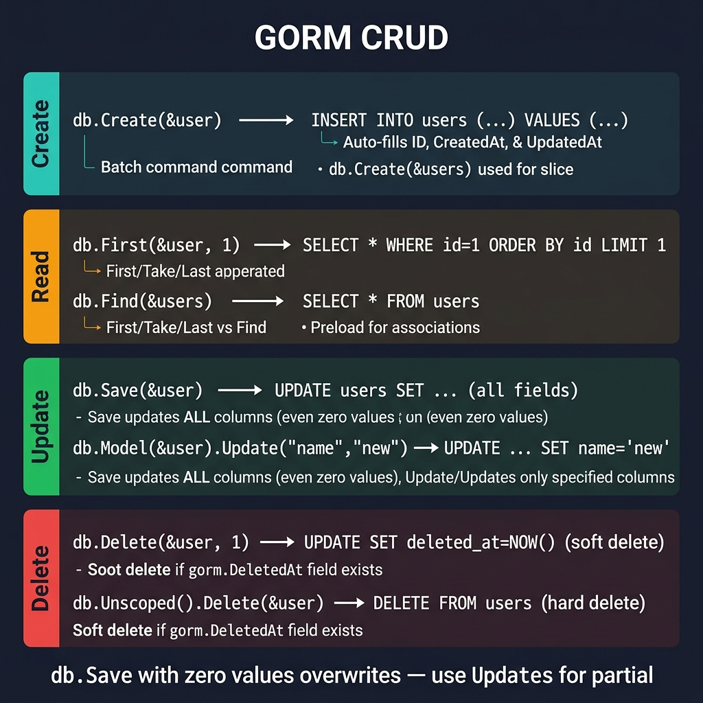
These traps survive unit tests and only bite in production.
| # | Severity | Defect | Impact | Fix |
|---|---|---|---|---|
| 1 | 🔴 FATAL | Zero-value fields skipped in struct updates | Age: 0 silently ignored — DB keeps old value | Use map[string]interface{} or db.Select("Age").Updates(...) |
| 2 | 🟡 COMMON | Unchecked result.Error | Errors swallowed; corrupted data propagates | Always check: if result.Error != nil |
| 3 | 🔴 FATAL | String concatenation in WHERE clauses | SQL injection | Use parameterized queries: db.Where("name = ?", name) |
| 4 | 🟡 COMMON | db.Delete(&User{}) without WHERE | Soft-deletes entire table | Always pass a condition or primary key |
| Resource | Link |
|---|---|
| GORM — Create | https://gorm.io/docs/create.html |
| GORM — Query | https://gorm.io/docs/query.html |
| GORM — Update | https://gorm.io/docs/update.html |
| GORM — Delete | https://gorm.io/docs/delete.html |
After mastering single-record CRUD, these are the natural next steps.
| Extension | When to proceed | Rationale |
|---|---|---|
| 03 — Querying | When WHERE chains, scopes, or subqueries get complex | Learn reusable query patterns that avoid raw SQL sprawl |
| 05 — Transactions & Hooks | Before writing multi-step business logic | Understand GORM’s auto-transaction wrapping and hook lifecycle |
---
## 🃏 Quick Reference
| Operation | GORM Code |
|---|---|
| Create record | db.Create(&user) |
| Find by primary key | db.First(&user, id) |
| Find with condition | db.Where("email = ?", email).First(&user) |
| Find all | db.Find(&users) |
| Update field | db.Model(&user).Update("name", "Alice") |
| Update multiple fields | db.Model(&user).Updates(User{Name: "Alice", Age: 20}) |
| Delete (soft) | db.Delete(&user, id) |
| Hard delete | db.Unscoped().Delete(&user, id) |
| Count | db.Model(&User{}).Count(&count) |
| Pagination | db.Offset((page-1)size).Limit(size).Find(&users) |
| Raw SQL | db.Raw("SELECT FROM users WHERE age > ?", 18).Scan(&users) |
| Check not found | errors.Is(err, gorm.ErrRecordNotFound) |
Next: [← Models & Connection](./01-models-and-connection.md) · [→ Querying](./03-querying.md)
Basic CRUD covers single-table operations. Real applications need scopes (reusable WHERE clauses), subqueries (nested SQL inside a WHERE), raw SQL (when the query builder cannot express what you need), and cursor pagination (when OFFSET becomes O(N) on large tables).
Advanced Query Features
| Feature | Description |
|---|---|
| Scopes | Reusable query fragments — composable WHERE/LIMIT/ORDER clauses. |
| SubQuery | Nested queries embedded inside WHERE or FROM clauses. |
| Raw SQL | Direct SQL execution when the query builder is insufficient. |
| Pluck | Extract a single column into a Go slice. |
| Scan | Map query results to a custom struct (not your GORM model). |
The fundamental danger emerges when Raw SQL implementations trigger injection vulnerabilities due to unvalidated inputs. This trap manifests deeply inside the PITFALLS section.
Mã nguồn & Các ví dụ minh họa
Where/Limit/Offset structures across diverse application handlers.
Approach: Build explicit scope functions receiving gorm.DB parameters and returning strict gorm.DB boundaries.
Complexity: Basicdb.Scopes() strictly requires a function signature of func(gorm.DB) gorm.DB. The closure pattern allows you to inject dynamic variables (like age or page) while still satisfying the required GORM signature cleanly.package main
import (
"fmt"
"gorm.io/gorm"
)
type User struct {
ID uint
Name string
Age int
Role string
IsActive bool
}
// ━━━━━━━━━━━━━━━━━━━━━━━━━━━━━━━━━━━━━━━━━
// Standard Scope syntax
// ━━━━━━━━━━━━━━━━━━━━━━━━━━━━━━━━━━━━━━━━━
func Active(db *gorm.DB) *gorm.DB {
return db.Where("is_active = ?", true)
}
func AgeOver(age int) func(db *gorm.DB) *gorm.DB {
return func(db *gorm.DB) *gorm.DB {
return db.Where("age > ?", age)
}
}
func Paginate(page, pageSize int) func(db *gorm.DB) *gorm.DB {
return func(db *gorm.DB) *gorm.DB {
if page <= 0 {
page = 1
}
if pageSize <= 0 {
pageSize = 10
}
offset := (page - 1) * pageSize
return db.Offset(offset).Limit(pageSize)
}
}
func demonstrateScopes(db *gorm.DB) {
var users []User
// Combine boundaries: Active + AgeOver(25) + pagination controls
db.Scopes(Active, AgeOver(25), Paginate(1, 10)).Find(&users)
// SQL: SELECT * FROM users WHERE is_active = true AND age > 25 LIMIT 10 OFFSET 0
fmt.Printf("Found %d users\n", len(users))
}func demonstrateAdvancedQueries(db *gorm.DB) {
var users []User
// ━━━━━━━━━━━━━━━━━━━━━━━━━━━━━━━━━━━━━━━━━
// SubQuery sequence
// ━━━━━━━━━━━━━━━━━━━━━━━━━━━━━━━━━━━━━━━━━
db.Where("id IN (?)",
db.Table("orders").Select("user_id").Where("total_amount > ?", 500000),
).Find(&users)
// ━━━━━━━━━━━━━━━━━━━━━━━━━━━━━━━━━━━━━━━━━
// Distinct Pluck mechanics
// ━━━━━━━━━━━━━━━━━━━━━━━━━━━━━━━━━━━━━━━━━
var emails []string
db.Model(&User{}).Where("is_active = ?", true).Pluck("email", &emails)
// ━━━━━━━━━━━━━━━━━━━━━━━━━━━━━━━━━━━━━━━━━
// Structural Scan attributes for custom aggregations
// ━━━━━━━━━━━━━━━━━━━━━━━━━━━━━━━━━━━━━━━━━
type UserStats struct {
TotalUsers int64
AvgAge float64
MaxAge int
MinAge int
}
var stats UserStats
db.Model(&User{}).Select(
"COUNT(*) as total_users",
"AVG(age) as avg_age",
"MAX(age) as max_age",
"MIN(age) as min_age",
).Scan(&stats)
// ━━━━━━━━━━━━━━━━━━━━━━━━━━━━━━━━━━━━━━━━━
// Native Raw SQL syntax
// ━━━━━━━━━━━━━━━━━━━━━━━━━━━━━━━━━━━━━━━━━
db.Raw("SELECT * FROM users WHERE string_parameter = @val",
map[string]interface{}{"val": "Alice"},
).Scan(&users) // ✅ Safely passing map variables avoids string concatenation injections.
}singleflight logic blocking concurrent repetitive lookup streams.
Complexity: Advancedlimit + 1 allows the underlying service to trivially detect if there are remaining pages. If the returned subset length strictly exceeds the limit, the handler truncates the final entry and correctly sets HasMore to true.package main
import (
"context"
"crypto/sha256"
"encoding/json"
"fmt"
"log"
"golang.org/x/sync/singleflight"
"gorm.io/driver/postgres"
"gorm.io/gorm"
)
type Product struct {
ID uint `gorm:"primarykey" json:"id"`
Category string `gorm:"size:100;index" json:"category"`
}
// ━━━━━━━━━━━━━━━━━━━━━━━━━━━━━━━━━━━━━━━━━
// CursorPaginate: Use WHERE id > cursor instead of OFFSET.
// OFFSET scans and discards rows — O(N) cost. Cursor seeks via index — O(1).
// ━━━━━━━━━━━━━━━━━━━━━━━━━━━━━━━━━━━━━━━━━
func CursorPaginate(cursor uint, limit int) func(*gorm.DB) *gorm.DB {
return func(db *gorm.DB) *gorm.DB {
if cursor > 0 {
db = db.Where("id > ?", cursor)
}
if limit <= 0 || limit > 100 {
limit = 20
}
return db.Order("id ASC").Limit(limit)
}
}
type ProductService struct {
db *gorm.DB
group singleflight.Group
}
type ListParams struct {
Category string
Cursor uint
Limit int
}
type ListResult struct {
Products []Product `json:"products"`
NextCursor uint `json:"next_cursor"`
HasMore bool `json:"has_more"`
}
func (s *ProductService) ListProducts(ctx context.Context, params ListParams) (*ListResult, error) {
// ━━━ Singleflight: deduplicate identical concurrent queries ━━━
keyData, _ := json.Marshal(params)
key := fmt.Sprintf("products:%x", sha256.Sum256(keyData))
val, err, shared := s.group.Do(key, func() (interface{}, error) {
var products []Product
result := s.db.WithContext(ctx).
Where("category = ?", params.Category).
Scopes(CursorPaginate(params.Cursor, params.Limit+1)).
Find(&products)
if result.Error != nil {
return nil, result.Error
}
hasMore := len(products) > params.Limit
if hasMore {
products = products[:params.Limit] // Trim the lookahead row
}
var nextCursor uint
if hasMore && len(products) > 0 {
nextCursor = products[len(products)-1].ID
}
return &ListResult{
Products: products,
NextCursor: nextCursor,
HasMore: hasMore,
}, nil
})
if err != nil {
return nil, err
}
if shared {
log.Printf("[Singleflight] Query deduplicated: %s", key[:16])
}
return val.(*ListResult), nil
}Sơ đồ trực quan & Luồng hoạt động (Visual Support)
Figure: Decision tree — reusable filter → Scopes (composable); complex nested → SubQuery; GORM can't express → Raw SQL; single column → Pluck ([]string); custom result shape → Scan (DTO struct).
Scope Composition Flow
``text
db.Scopes(Active, AgeOver(18), Paginate(1, 10)).Find(&users)
Active ──┐ │ AgeOver ─┼──▶ Combined WHERE string ──▶ Output SQL bounds │ Paginate ┘
Generated SQL: SELECT * FROM users WHERE is_active = true AND age > 18 LIMIT 10 OFFSET 0 ``
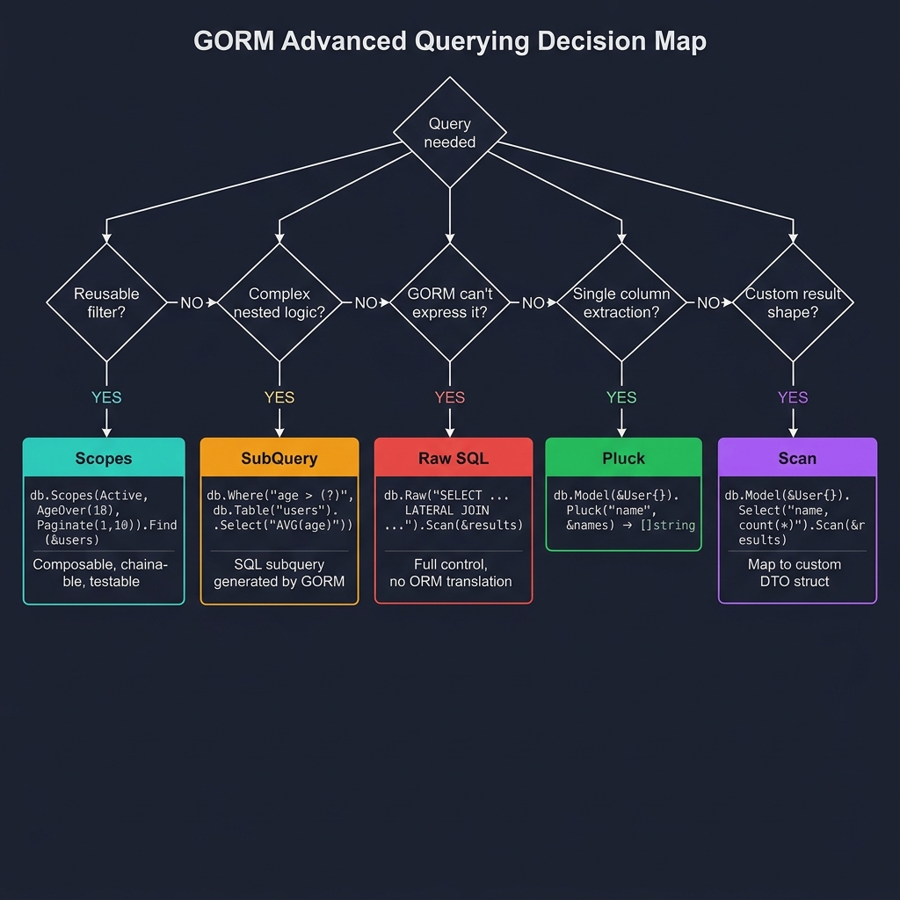
Evaluating proper mapping sequences prevents disastrous scale collapse in relational evaluations.
| # | Severity | Defect | Impact | Fix |
|---|---|---|---|---|
| 1 | 🔴 FATAL | Constructing Raw SQL via native string concatenation blindly | Security breach | Implement parameter models parsing specific ? placeholders strictly tracking bounds securely. |
| 2 | 🟡 COMMON | Utilizing massive database global OFFSET sequences indiscriminately | Deep scaling timeouts | Format dynamic target boundaries utilizing cursor tracking systems managing reliable sequential arrays. |
| 3 | 🔵 MINOR | Failing to bind singleflight locks controlling redundant lookup traffic | Cache stampede exhaustion | Integrate sync modules blocking repetitive execution logic caching exact parallel execution boundaries safely. |
| Resource | Link |
|---|---|
| GORM — Advanced Query | https://gorm.io/docs/advancedquery.html |
| GORM — Scopes | https://gorm.io/docs/scopes.html |
| GORM — Raw SQL | https://gorm.io/docs/sqlbuilder.html |
With query patterns established, scale into relational and transactional territory.
| Extension | When to proceed | Rationale |
|---|---|---|
| 04 — Associations | When queries span multiple related tables | Learn Preload vs Joins and avoid N+1 traps |
| 05 — Transactions & Hooks | When multi-table writes need atomicity | Understand rollback, hook lifecycle, and nested transactions |
---
GORM supports four association types: Belongs To, Has One, Has Many, and Many2Many. The critical skill is not declaring them — it is loading them correctly. Without explicit Preload or Joins, GORM returns empty association fields, and naive loops trigger N+1 query storms that exhaust connection pools.
4 Association Types
| Association | Structural Relation | FK Location | Example Models |
|---|---|---|---|
| Belongs To | N:1 | Enclosed within current model | Order → User (Order embeds UserID) |
| Has One | 1:1 | Located within target model | User → Profile (Profile embeds UserID) |
| Has Many | 1:N | Located within target model | User → Orders (Order embeds UserID) |
| Many2Many | N:M | Generates junction tables | Order ↔ Products (via junction orderproducts) |
Preloading Models
| Method | Execution Context | SQL Pattern Example |
|---|---|---|
| Preload | Eager loading via 2 queries (prevents N+1) | SELECT FROM users; SELECT FROM orders WHERE userid IN (...) |
| Joins | Single LEFT JOIN query (best for 1:1 relations) | SELECT * FROM users LEFT JOIN profiles ON ... |
Failure Modes
| Failure | Root Cause | Fix |
|---|---|---|
| N+1 queries escalation | Traversing mapped associations inside looping logic while omitting Preload. | Explictly append Preload("Orders") before executing Find. |
| Circular routing | Preloading nested self-referential bounds infinitely. | Constrain preloading targets utilizing explicit path bounds (e.g., A.B). |
| FK mismatching | Existing legacy column properties violate GORM naming models. | Define strict foreignKey tag overrides on the model struct. |
These failures appear minor. Yet a trap exists: N+1 structures remain dormant until production data scales massively, crashing systems outright. Furthermore, executing Joins over 1:N targets silently duplicates rows. This trap manifests deeply inside the PITFALLS section.
Mã nguồn & Các ví dụ minh họa
Belongs To, structured Has One, mapped Has Many, and linked Many2Many components utilizing standard structural tags.
Complexity: BasicUserID uint field ensures you can assign relationships instantly using IDs without fetching and loading the entire massive User struct instance from the database first.package models
import "gorm.io/gorm"
// ━━━━━━━━━━━━━━━━━━━━━━━━━━━━━━━━━━━━━━━━━
// User model maps all primary baseline associations
// ━━━━━━━━━━━━━━━━━━━━━━━━━━━━━━━━━━━━━━━━━
type User struct {
gorm.Model
Name string
Email string
// Has One parameter: User <──1:1──> Profile
Profile Profile
// Has Many parameter: User <──1:N──> Orders
Orders []Order
// Many2Many mapping parameter: User <──N:M──> Roles
// Constructs junction database table mapping: user_roles
Roles []Role `gorm:"many2many:user_roles;"`
}
// ━━━━━━━━━━━━━━━━━━━━━━━━━━━━━━━━━━━━━━━━━
// Profile mapping logic: Belongs To nested User structure (1:1 constraint)
// ━━━━━━━━━━━━━━━━━━━━━━━━━━━━━━━━━━━━━━━━━
type Profile struct {
gorm.Model
UserID uint // FK established here
Bio string
User User // Belongs To definition
}
// ━━━━━━━━━━━━━━━━━━━━━━━━━━━━━━━━━━━━━━━━━
// Order: Belongs To User (N:1 — FK lives in Order)
// ━━━━━━━━━━━━━━━━━━━━━━━━━━━━━━━━━━━━━━━━━
type Order struct {
gorm.Model
UserID uint
OrderNumber string
User User // Belongs To component
Items []OrderItem // Has Many component
}
type OrderItem struct {
gorm.Model
OrderID uint
ProductID uint
Order Order
Product Product
}
type Product struct {
gorm.Model
Name string
Price float64
}
// ━━━━━━━━━━━━━━━━━━━━━━━━━━━━━━━━━━━━━━━━━
// Role: Many2Many with User via junction table user_roles
// ━━━━━━━━━━━━━━━━━━━━━━━━━━━━━━━━━━━━━━━━━
type Role struct {
gorm.Model
Name string
Users []User `gorm:"many2many:user_roles;"` // Connects inverse bounds
}Preload bindings mapping immediate relations, formulate nested patterns, and implement dynamic logical preload constraints.
Complexity: IntermediateLEFT JOIN on a Has Many relation duplicates parent rows — one parent row per child row. With 100 users and 10 orders each, that is 1,000 rows transmitted. Two separate queries (100 users + 1,000 orders) avoid this duplication and reduce memory overhead.func demonstratePreload(db *gorm.DB) {
var users []User
// ━━━━━━━━━━━━━━━━━━━━━━━━━━━━━━━━━━━━━━━━━
// ❌ Critical System Problem (N+1 query trigger)
// ━━━━━━━━━━━━━━━━━━━━━━━━━━━━━━━━━━━━━━━━━
db.Find(&users)
for _, u := range users {
// Individual access calls query database N times!
fmt.Println(u.Name, "has orders:", len(u.Orders)) // Orders outputs empty structs magically!
}
// ━━━━━━━━━━━━━━━━━━━━━━━━━━━━━━━━━━━━━━━━━
// ✅ Implemented Preload mapping
// ━━━━━━━━━━━━━━━━━━━━━━━━━━━━━━━━━━━━━━━━━
db.Preload("Orders").Find(&users)
// SQL 1: SELECT * FROM users
// SQL 2: SELECT * FROM orders WHERE user_id IN (1,2,3...)
// ━━━ Evaluate Nested Preloads ━━━
db.Preload("Orders.Items.Product").Find(&users)
// ━━━ Activate configured Preload constraints applying dynamic array bounds ━━━
db.Preload("Orders", "status = ?", "pending").Find(&users)
// ━━━ Preload with custom function for complex filters ━━━
db.Preload("Orders", func(db *gorm.DB) *gorm.DB {
return db.Where("total_amount > ?", 100000).Order("created_at DESC")
}).Find(&users)
// ━━━━━━━━━━━━━━━━━━━━━━━━━━━━━━━━━━━━━━━━━
// Preload All variables — processes ALL attached associated mapped configurations
// ⚠ Assess resulting performance carefully!
// ━━━━━━━━━━━━━━━━━━━━━━━━━━━━━━━━━━━━━━━━━
db.Preload(clause.Associations).Find(&users)
}Joins tracking targets, replacing nested properties dynamically utilizing Association() syntax.
Complexity: AdvancedJoins across a 1:1 (Profile) yields a clean output. Emitting Joins across a 1:N (Orders) generates cartesian database outputs mutating into redundant array allocations when mapped natively into Go structures.import "gorm.io/gorm/clause"
func demonstrateJoinsAndAssocMode(db *gorm.DB) {
var users []User
// ━━━━━━━━━━━━━━━━━━━━━━━━━━━━━━━━━━━━━━━━━
// Bounded Joins Preloading targeting strict 1:1 associations safely
// ━━━━━━━━━━━━━━━━━━━━━━━━━━━━━━━━━━━━━━━━━
db.Joins("Profile").Find(&users)
// SQL: SELECT ... FROM users LEFT JOIN profiles ON profiles.user_id = users.id
// Bounded explicit Joins rendering specific internal where filters
db.Joins("Profile", db.Where(&Profile{Bio: "Developer"})).Find(&users)
// ━━━━━━━━━━━━━━━━━━━━━━━━━━━━━━━━━━━━━━━━━
// Modifying relational array sets natively
// ━━━━━━━━━━━━━━━━━━━━━━━━━━━━━━━━━━━━━━━━━
var user User
db.First(&user, 1)
// Append operations linking distinct internal instances
newOrder := Order{OrderNumber: "ORD-100", TotalAmount: 250000}
db.Model(&user).Association("Orders").Append(&newOrder)
// Replaces explicit sequences purging previous bounded junction definitions
newRoles := []Role{{Name: "admin"}, {Name: "manager"}}
db.Model(&user).Association("Roles").Replace(&newRoles)
// Deletes particular bounded mapping properties specifically
db.Model(&user).Association("Roles").Delete(&Role{Name: "manager"})
// Eradicates ALL linked relations targeting this specific block permanently
db.Model(&user).Association("Roles").Clear()
// Evaluates database constraints executing direct remote counting metrics
count := db.Model(&user).Association("Orders").Count()
fmt.Printf("Order count: %d\n", count)
}Sơ đồ trực quan & Luồng hoạt động (Visual Support)
Figure: Four association types with FK ownership — BelongsTo (FK in child), HasOne (FK in related), HasMany (FK in related, slice), Many2Many (junction table). Loading: Preload = 2 SELECTs, Joins = 1 LEFT JOIN.
Association Types Structure
``text
Belongs To (FK resides here) Has One (FK resides there)
┌─────────┐ FK ┌───────┐ ┌───────┐ FK ┌─────────┐
│ Order │──────────▶│ User │ │ User │◀─────────│ Profile │
│ UserID │ │ │ │ │ │ UserID │
└─────────┘ └───────┘ └───────┘ └─────────┘
Has Many (FK resides there) Many2Many (junction table) ┌───────┐ FK ┌─────────┐ ┌───────┐ ┌──────────┐ ┌─────────┐ │ User │◀─────────│ Order │ │ Order │◀▶│orderprod│◀▶│ Product │ │ │ │ UserID │ │ │ │orderid │ │ │ └───────┘ │ (many) │ └───────┘ │product_id│ └─────────┘ └─────────┘ └──────────┘ ``
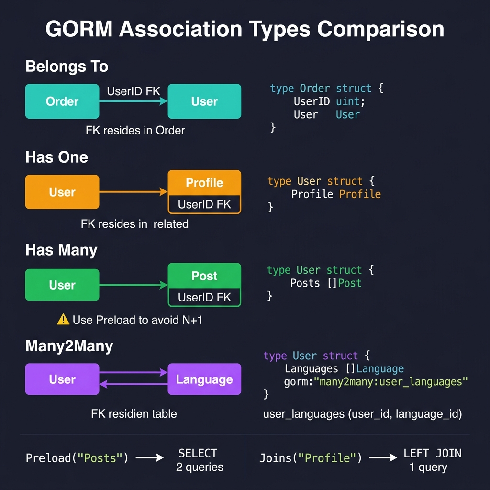
Association bugs are dormant in development and catastrophic at scale.
| # | Severity | Defect | Impact | Fix |
|---|---|---|---|---|
| 1 | 🔴 FATAL | Looping over associations without Preload | N+1 queries — 1 query per row | Add db.Preload("Orders").Find(&users) before the loop |
| 2 | 🟡 COMMON | Using Joins on Has Many (1:N) relations | Duplicate parent rows in result set | Use Preload for 1:N; reserve Joins for 1:1 |
| 3 | 🔵 MINOR | Omitting many2many tag on the inverse side | AutoMigrate fails to create junction table | Add gorm:"many2many:table_name" on both structs |
| Resource | Link |
|---|---|
| GORM — Associations | https://gorm.io/docs/associations.html |
| GORM — Has One | https://gorm.io/docs/has_one.html |
| GORM — Preloading | https://gorm.io/docs/preload.html |
With associations mapped, move into transactional integrity and query optimization.
| Extension | When to proceed | Rationale |
|---|---|---|
| 05 — Transactions & Hooks | When multi-model writes need atomicity | Learn nested transactions, SavePoint, and hook lifecycle |
| 03 — Querying | When association filters get complex | Use Scopes and SubQueries to compose conditional Preloads |
---
GORM wraps every write operation in an implicit transaction. For single-table inserts that is fine. For multi-table business logic — debiting an account, creating an order, and logging an audit trail — you need explicit transaction boundaries and an understanding of GORM’s hook lifecycle to avoid partial commits and infinite callback loops.
Transactions Overview
GORM wraps every native write operation (Create, Update, Delete) inside an implicit database transaction. Developers can disable this automatic wrapping for performance gains or establish rigid manual transaction boundaries for multi-table atomic operations.
| Method | Internal Description |
|---|---|
db.Transaction(func) | Automatic commit/rollback logic — returning nil triggers sequence commit, returning error executes safe rollback. |
db.Begin() | Manual mapping boundaries — requires explicit configured sequence operations (Commit or Rollback). |
Nested tx.Transaction | Savepoint execution — inner rollback events bypass external isolated parent queries. |
Hooks (Lifecycle Callbacks)
| Hook | Execution Sequence Timing | Use Case |
|---|---|---|
BeforeCreate | Preceding INSERT operations | Struct validation, password hashing sequences, UUID rendering. |
AfterCreate | Following INSERT operations | Dispatch async jobs, audit map generation. |
BeforeUpdate | Preceding UPDATE | Validate sequence parameters, timestamp overrides. |
AfterUpdate | Following UPDATE | Replicate caching properties dynamically. |
AfterFind | Following SELECT operations | Decrypt secure payload properties cleanly. |
Failure Modes
| Failure | Root Cause | Fix |
|---|---|---|
| Partial updates | Omitting explicit transaction wrappers across interdependent tables. | Wrap interrelated array parameters generating bound logic within Transaction(func). |
| Silent transaction escape | Executing DB operations using the global db instance inside a transaction block instead of using tx. | Always specify tx.Create() inside transaction closures. |
| Infinite hook loops | Executing Save or Update parameters directly inside an AfterSave hook. | Use tx.Session(&gorm.Session{SkipHooks: true}).Update(). |
These failure modes seem straightforward. However, an operational trap exists: utilizing the global db variable inside an active transaction silently executes writes outside the safety boundary, instantly destroying ACID guarantees. This trap manifests deeply inside the PITFALLS section.
Mã nguồn & Các ví dụ minh họa
db.Transaction(func(tx *gorm.DB) error { ... }) wrapper.
Complexity: Basicdb.Transaction(func) automatically catches panics internally and safely executes a rollback. Manual db.Begin() routines require complex nested defer func() blocks to catch panics reliably, increasing boilerplate cognitive load.package main
import (
"fmt"
"gorm.io/gorm"
)
type Order struct {
ID uint
UserID uint
OrderNumber string
TotalAmount float64
}
type Payment struct {
ID uint
OrderID uint
Amount float64
}
type User struct {
ID uint
Balance float64
}
func createOrderWithPayment(db *gorm.DB, userID uint, amount float64) error {
// ━━━━━━━━━━━━━━━━━━━━━━━━━━━━━━━━━━━━━━━━━
// db.Transaction evaluates block operations automatically:
// - returning nil → COMMITS transaction naturally.
// - returning errors → ROLLBACK sequence safely.
// ⚠ Operate utilizing explicit 'tx' definitions ONLY!
// ━━━━━━━━━━━━━━━━━━━━━━━━━━━━━━━━━━━━━━━━━
return db.Transaction(func(tx *gorm.DB) error {
// Step 1: Execute order mapping securely
order := Order{
UserID: userID,
OrderNumber: fmt.Sprintf("ORD-%d", userID),
TotalAmount: amount,
}
if err := tx.Create(&order).Error; err != nil {
return err // ← ACTIVATES ROLLBACK explicitly
}
// Step 2: Establish payment sequences safely
payment := Payment{
OrderID: order.ID,
Amount: amount,
}
if err := tx.Create(&payment).Error; err != nil {
return err // ← COMMENCES FULL ROLLBACK
}
// Step 3: Manipulate user balances atomically
if err := tx.Model(&User{}).Where("id = ?", userID).
Update("balance", gorm.Expr("balance - ?", amount)).Error; err != nil {
return err
}
return nil // ← All three writes committed atomically
})
}tx.Transaction(...) targeting localized elements safely.
Complexity: Intermediatefunc demonstrateNestedTx(db *gorm.DB) {
db.Transaction(func(tx *gorm.DB) error {
// ━━━ Parent Scope: process target user structures ━━━
tx.Create(&User{Balance: 1000})
// ━━━ Sub Scope 1: Failing task utilizing boundaries ━━━
tx.Transaction(func(tx2 *gorm.DB) error {
tx2.Create(&Order{OrderNumber: "ORD-FAIL"})
return fmt.Errorf("rollback inner tx solely") // ← initiates isolated rollback cleanly
})
// ━━━ Sub Scope 2: Successful component tracking ━━━
tx.Transaction(func(tx3 *gorm.DB) error {
tx3.Create(&Payment{Amount: 50})
return nil
})
return nil // ← RESOLVES parent logic securing the primary User and Sub Scope 2 elements.
})
// ━━━━━━━━━━━━━━━━━━━━━━━━━━━━━━━━━━━━━━━━━
// Manual Savepoint management
// ━━━━━━━━━━━━━━━━━━━━━━━━━━━━━━━━━━━━━━━━━
manualTx := db.Begin()
manualTx.Create(&User{Balance: 500})
manualTx.SavePoint("before_risky_order")
manualTx.Create(&Order{OrderNumber: "ORD-RISKY"})
manualTx.RollbackTo("before_risky_order") // ← tracks isolation parameters separating variables
manualTx.Commit() // The primary user configuration remains secure.
}BeforeCreate bounds and generate automated AfterCreate async executions perfectly.
Complexity: Advanceddb variable inside a hook initiates a distinct database connection ignoring the active transaction context completely. If the primary transaction rolls back subsequently, the nested hook operation remains committed permanently, causing massive sequence fragmentation.package models
import (
"errors"
"fmt"
"strings"
"time"
"golang.org/x/crypto/bcrypt"
"gorm.io/gorm"
)
type SecureUser struct {
gorm.Model
Email string `gorm:"uniqueIndex"`
Password string
}
type AuditLog struct {
gorm.Model
Action string
EntityID uint
CreatedAt time.Time
}
// ━━━━━━━━━━━━━━━━━━━━━━━━━━━━━━━━━━━━━━━━━
// BeforeCreate definition validates mapping values defensively.
// ━━━━━━━━━━━━━━━━━━━━━━━━━━━━━━━━━━━━━━━━━
func (u *SecureUser) BeforeCreate(tx *gorm.DB) error {
if !strings.Contains(u.Email, "@") {
return errors.New("invalid email format")
}
if u.Password != "" {
hashed, err := bcrypt.GenerateFromPassword([]byte(u.Password), bcrypt.DefaultCost)
if err != nil {
return fmt.Errorf("failed to hash password: %w", err)
}
u.Password = string(hashed)
}
u.Email = strings.ToLower(strings.TrimSpace(u.Email))
return nil
}
// ━━━━━━━━━━━━━━━━━━━━━━━━━━━━━━━━━━━━━━━━━
// AfterCreate mapping handles asynchronous auditing paths seamlessly.
// ━━━━━━━━━━━━━━━━━━━━━━━━━━━━━━━━━━━━━━━━━
func (u *SecureUser) AfterCreate(tx *gorm.DB) error {
// Utilize the provided 'tx' variable explicitly avoiding isolated database connections!
return tx.Create(&AuditLog{
Action: "user_created",
EntityID: u.ID,
CreatedAt: time.Now(),
}).Error
}
// ━━━━━━━━━━━━━━━━━━━━━━━━━━━━━━━━━━━━━━━━━
// AfterFind elements redact secure payload properties upon readout.
// ━━━━━━━━━━━━━━━━━━━━━━━━━━━━━━━━━━━━━━━━━
func (u *SecureUser) AfterFind(tx *gorm.DB) error {
u.Password = "[REDACTED]"
return nil
}Sơ đồ trực quan & Luồng hoạt động (Visual Support)
Figure: Manual vs Closure transactions (closure recommended — auto rollback on error). Hook order: BeforeSave → BeforeCreate → INSERT → AfterCreate → AfterSave. Hooks run inside tx — error triggers rollback.
Hook Execution Ordering
``text
db.Create(&user)
BeforeSave ──▶ BeforeCreate ──▶ native INSERT sequence ──▶ AfterCreate ──▶ AfterSave
db.Save(&user) (standard array update sequences)
BeforeSave ──▶ BeforeUpdate ──▶ generated UPDATE mapping ──▶ AfterUpdate ──▶ AfterSave ``
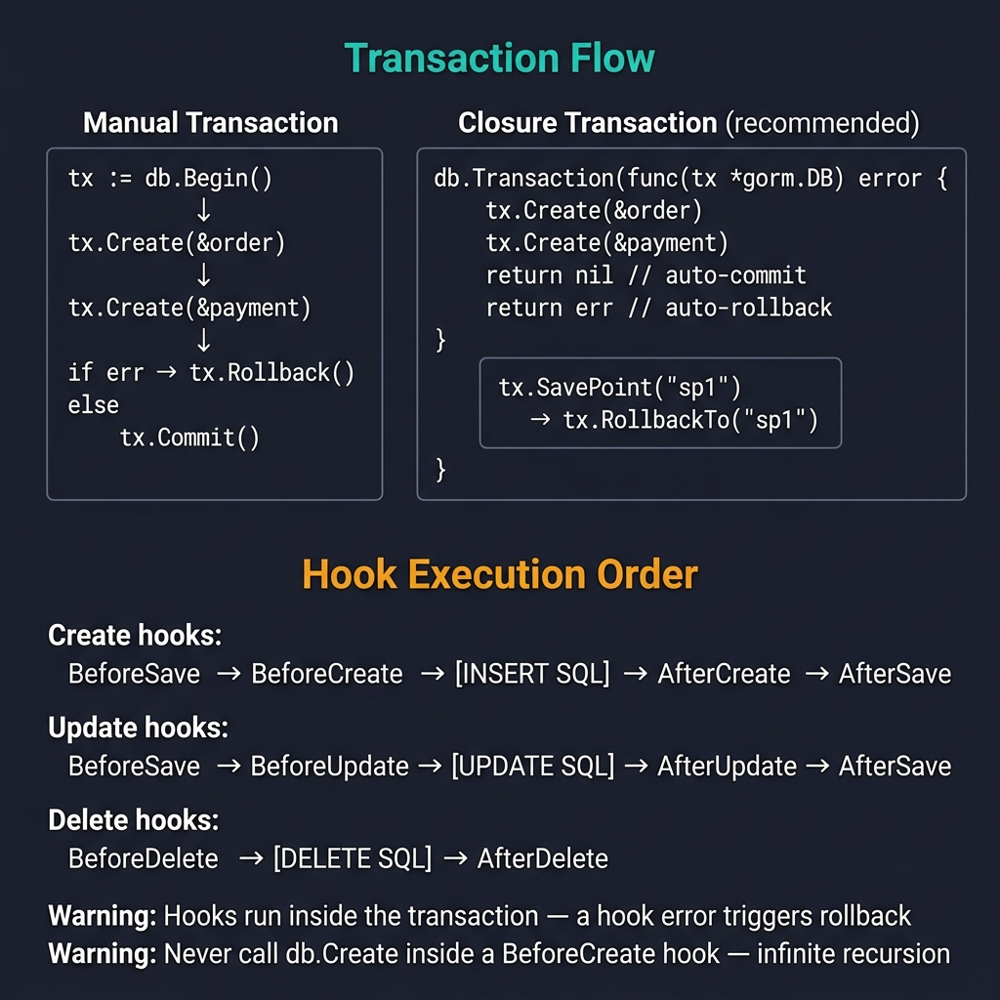
These traps silently break ACID guarantees.
| # | Severity | Defect | Impact | Fix |
|---|---|---|---|---|
| 1 | 🔴 FATAL | Using global db inside Transaction(func) closure | Writes bypass the transaction and persist on rollback | Always use the injected tx parameter |
| 2 | 🔴 FATAL | Calling tx.Save() inside an AfterSave hook | Infinite recursive loop | Use tx.Session(&gorm.Session{SkipHooks: true}).Save() |
| 3 | 🟡 COMMON | No panic recovery in manual db.Begin() | Connection leaked on panic | Use db.Transaction(func) or add defer recover with tx.Rollback() |
| Resource | Link |
|---|---|
| GORM — Transactions | https://gorm.io/docs/transactions.html |
| GORM — Hooks | https://gorm.io/docs/hooks.html |
With transaction basics in place, scale into advanced locking and performance.
| Extension | When to proceed | Rationale |
|---|---|---|
| 08 — Row Locking | When concurrent writes on the same row cause race conditions | Learn SELECT FOR UPDATE, NOWAIT, and SKIP LOCKED patterns |
| SkipDefaultTransaction | When bulk inserts are slow | Disabling implicit transaction wrapping yields ~30% throughput gain |
---
AutoMigrate is convenient for local development but dangerous in production — it adds columns but never removes them, cannot rename fields, and offers no rollback path. This article covers migration strategies (AutoMigrate vs golang-migrate vs goose vs Atlas), connection pool tuning, Upsert patterns, and row-level locking.
Migration Strategies
| Strategy | Use Case | Pros | Cons |
|---|---|---|---|
| AutoMigrate | Development prototypes | Zero configuration limits | Ignores column deletion and complex ALTER constraints |
| golang-migrate | Production models | Grants comprehensive DDL syntax control mechanisms | Introduces manual configuration complexity |
| goose | Production mapping | Applies standard Go-based variables generating concise API targets | Limits formatting configuration variables slightly |
| Atlas | Modern production schema | Applies declarative configuration syntax safely | Introduces complex theoretical learning curves |
Performance Considerations
| Technique | System Impact | Implementation |
|---|---|---|
| SkipDefaultTransaction | +30% sequence write execution speed | gorm.Config{SkipDefaultTransaction: true} |
| PrepareStmt | Caches prepared statement variables | gorm.Config{PrepareStmt: true} |
| Connection Pool | Prevents dormant connection leak occurrences | Execute SetMaxOpenConns and SetMaxIdleConns |
| Batch operations | Reduces sequence network round-trips | Use CreateInBatches or FindInBatches |
Failure Modes
| Failure | Root Cause | Fix |
|---|---|---|
| Migration configuration drift | Operating hybrid AutoMigrate logic combined with manual limits. | Establish a single discrete execution strategy completely. |
| Connection limit exhaustion | Structuring restricted connection pools executing extreme query durations. | Scale pool variables and configure optimized target indexes. |
| Execution pattern Deadlocks | Updating identical rows executing concurrent map boundaries. | Enforce row-level constraints accurately. |
These failure modes seem avoidable. Yet a trap exists: executing AutoMigrate functions within strict production boundaries prohibits rollback logic entirely, and deploying missing connection pool configurations guarantees invisible execution exhaustion faults.
Mã nguồn & Các ví dụ minh họa
SetMaxOpenConns, Go spawns unbounded DB connections during traffic bursts, quickly overwhelming PostgreSQL's default max_connections (100) and crashing the database completely.package database
import (
"fmt"
"log"
"os"
"time"
"gorm.io/driver/postgres"
"gorm.io/gorm"
"gorm.io/gorm/logger"
)
type Config struct {
Host string
Port int
User string
Password string
DBName string
SSLMode string
TimeZone string
}
func NewConnection(cfg Config) (*gorm.DB, error) {
dsn := fmt.Sprintf(
"host=%s port=%d user=%s password=%s dbname=%s sslmode=%s TimeZone=%s",
cfg.Host, cfg.Port, cfg.User, cfg.Password, cfg.DBName, cfg.SSLMode, cfg.TimeZone,
)
// Choose log level based on environment
var logLevel logger.LogLevel
if os.Getenv("APP_ENV") == "production" {
logLevel = logger.Warn
} else {
logLevel = logger.Info
}
newLogger := logger.New(
log.New(os.Stdout, "\r\n", log.LstdFlags),
logger.Config{
SlowThreshold: 200 * time.Millisecond,
LogLevel: logLevel,
IgnoreRecordNotFoundError: true,
Colorful: true,
},
)
db, err := gorm.Open(postgres.Open(dsn), &gorm.Config{
Logger: newLogger,
// Disable default transaction wrapping for pure speed (~30% boost).
SkipDefaultTransaction: true,
// Cache prepared statements efficiently (~15% boost).
PrepareStmt: true,
})
if err != nil {
return nil, fmt.Errorf("failed to connect database: %w", err)
}
sqlDB, err := db.DB()
if err != nil {
return nil, fmt.Errorf("failed to get underlying DB: %w", err)
}
// Cap total open connections to match DB's max_connections budget
sqlDB.SetMaxOpenConns(25)
// Keep idle connections warm for burst traffic
sqlDB.SetMaxIdleConns(10)
// Recycle connections to avoid stale TCP sessions
sqlDB.SetConnMaxLifetime(5 * time.Minute)
return db, nil
}clause.OnConflict array logic validating mappings explicitly.
Complexity: IntermediateFind followed by an Update introduces a critical race condition. ON CONFLICT executes atomically inside the database engine natively.import "gorm.io/gorm/clause"
type User struct {
ID uint
Email string `gorm:"unique"`
Name string
Role string
}
func demonstrateUpsert(db *gorm.DB) {
// 1. Process mapping logic bypassing parameters doing nothing on conflict.
db.Clauses(clause.OnConflict{DoNothing: true}).
Create(&User{Email: "alice@example.com", Name: "Alice"})
// 2. Track arrays formulating specific column updates upon conflict accurately.
db.Clauses(clause.OnConflict{
Columns: []clause.Column{{Name: "email"}},
DoUpdates: clause.AssignmentColumns([]string{"name", "role"}),
}).Create(&User{
Email: "alice@example.com",
Name: "Alice Updated",
Role: "admin",
})
}clause.Locking{Strength: "UPDATE"} establishing row exclusions reliably.
Complexity: AdvancedFOR UPDATE queries block indefinitely while waiting for previous transaction releases. NOWAIT instantly returns an error, freeing the application thread safely.func demonstrateLocking(db *gorm.DB) {
db.Transaction(func(tx *gorm.DB) error {
var user User
// Execute SELECT FOR UPDATE establishing exclusive row locks defensively.
tx.Clauses(clause.Locking{Strength: "UPDATE"}).
First(&user, 1)
user.Balance -= 100
tx.Save(&user)
return nil
})
db.Transaction(func(tx *gorm.DB) error {
var user User
// Execute NOWAIT preventing connection blocking entirely.
err := tx.Clauses(clause.Locking{
Strength: "UPDATE",
Options: "NOWAIT",
}).First(&user, 1).Error
if err != nil {
return fmt.Errorf("row is locked concurrently: %w", err)
}
return nil
})
}singleflight.Group eliminating cache stampede patterns natively.
Complexity: Expertsingleflight.Group ensures only one database query occurs, distributing the result to all awaiting clients flawlessly.package repository
import (
"context"
"encoding/json"
"fmt"
"log"
"time"
"github.com/redis/go-redis/v9"
"golang.org/x/sync/singleflight"
"gorm.io/gorm"
)
type CachedRepository[T any] struct {
db *gorm.DB
rdb *redis.Client
group singleflight.Group
prefix string
cacheTTL time.Duration
}
func NewCachedRepository[T any](db *gorm.DB, rdb *redis.Client, prefix string, ttl time.Duration) *CachedRepository[T] {
return &CachedRepository[T]{
db: db,
rdb: rdb,
prefix: prefix,
cacheTTL: ttl,
}
}
func (r *CachedRepository[T]) cacheKey(id uint) string {
return fmt.Sprintf("%s%d", r.prefix, id)
}
func (r *CachedRepository[T]) FindByID(ctx context.Context, id uint) (*T, error) {
key := r.cacheKey(id)
// Step 1: Read local cache elements directly.
cached, err := r.rdb.Get(ctx, key).Result()
if err == nil {
var entity T
if json.Unmarshal([]byte(cached), &entity) == nil {
return &entity, nil
}
}
// Step 2: Utilize singleflight preventing thundering herd complications identically.
val, err, shared := r.group.Do(key, func() (interface{}, error) {
var entity T
if err := r.db.WithContext(ctx).First(&entity, id).Error; err != nil {
return nil, err
}
// Asynchronously populate cache sequences avoiding main thread blocking completely.
go func() {
data, _ := json.Marshal(entity)
if err := r.rdb.Set(context.Background(), key, data, r.cacheTTL).Err(); err != nil {
log.Printf("Cache set failed: %v", err)
}
}()
return &entity, nil
})
if err != nil {
return nil, err
}
if shared {
log.Printf("Deduplicated DB query for %s", key)
}
return val.(*T), nil
}Sơ đồ trực quan & Luồng hoạt động (Visual Support)
Figure: Dev → AutoMigrate (additive only, no column drops). Production → migration tools (golang-migrate, goose, atlas) with versioned SQL pairs. Upsert via clause.OnConflict for idempotent writes.
Connection Pool Mechanisms
``text
Application Boundary
│
├── goroutine 1 ──▶ ┌─────────────────────┐ ──▶ DB processing
├── goroutine 2 ──▶ │ Connection Pool │ ──▶ DB processing
├── goroutine 3 ──▶ │ MaxOpen limit: 25 │ ──▶ DB processing
├── goroutine 4 ──▶ │ MaxIdle state: 10 │ ──▶ DB processing
└── goroutine 5 ──▶ │ MaxLifetime: 5min │ ──▶ DB processing
└─────────────────────┘
↑ ↑
Idle pool variables Active process boundaries
``
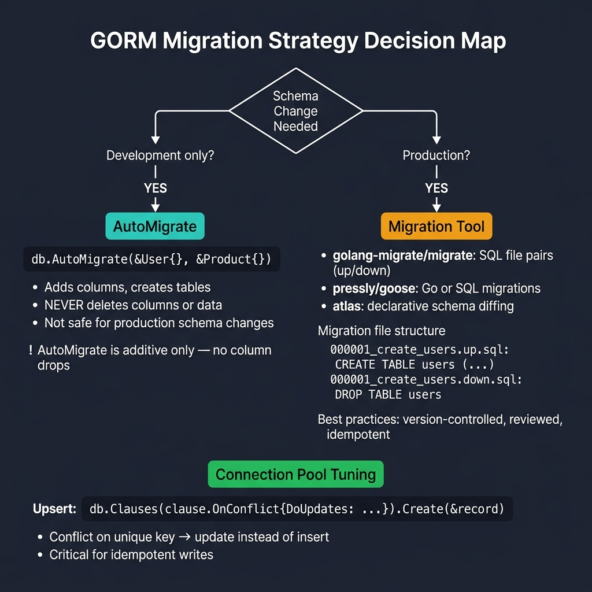
These issues only manifest under production load.
| # | Severity | Defect | Fix |
|---|---|---|---|
| 1 | 🔴 FATAL | Missing SetMaxOpenConns | Set SetMaxOpenConns(25) and SetMaxIdleConns(10) — defaults are unlimited |
| 2 | 🟡 COMMON | PrepareStmt not enabled | Add PrepareStmt: true in gorm.Config for ~15% query performance gain |
| 3 | 🟠 Warning | Running AutoMigrate in production | Use versioned migration tools (golang-migrate, goose) for reversible DDL |
| Resource | Link |
|---|---|
| GORM — Performance | https://gorm.io/docs/performance.html |
| golang-migrate | https://github.com/golang-migrate/migrate |
| GORM — Clauses | https://gorm.io/docs/sql_builder.html |
With migration and performance basics covered, these are the natural next steps.
| Extension | When to proceed | Rationale |
|---|---|---|
| 07 — Transaction Patterns | When multi-table writes need atomicity and idempotency | Learn outbox pattern, unit-of-work, and idempotency keys |
| 12 — Performance Tuning | When queries slow down at scale | Covers query analysis, index strategy, and observability setup |
---
Basic db.Transaction() works for simple cases. Production services demand more: idempotency keys to survive retries, transactional outbox to avoid dual-write problems, and unit-of-work wrappers to standardize logging and error handling across dozens of service methods.
Production Transaction Pattern Requirements
| Concern | Purpose |
|---|---|
| Clear Boundary | Define which code blocks require atomic execution. |
| Idempotency | Prevent duplicate writes when clients retry requests. |
| Error Mapping | Return precise errors that trigger correct rollback behavior. |
| Side Effects | Never publish events or call external APIs inside uncommitted transactions. |
Failure Modes
| Failure | Root Cause | Fix |
|---|---|---|
| Duplicate processing | Configuring retrying sequence requests lacking idempotency mapping logic. | Implement idempotency keys mapping natural unique target constraints natively. |
| Transaction bloating | Embedding external API routing logic evaluating inside uncommitted persistence blocks. | Restrict transaction operations executing rigid database mutations exclusively. |
| Asymmetric side effects | Bypassing commit gaps formatting asynchronous events directly. | Format transactional outbox logic defining deferred publish mappings safely. |
Reviewing standard failure modes predicts basic errors. A fatal operational trap exists: embedding external API HTTP calls inside active database bounds guarantees deadlock scaling limits immediately, and omitting idempotency logic processes duplicate business operations instantly.
Mã nguồn & Các ví dụ minh họa
db.Transaction(...) evaluating debit limits mapping credit logic within grouped properties.
Complexity: Basic// transaction_boundary.go — Keep related DB mutations inside one explicit service transaction
package ormadvanced
import (
"context"
"fmt"
"gorm.io/gorm"
)
type Account struct {
ID uint
Balance int64
}
func TransferBalance(ctx context.Context, db *gorm.DB, fromID, toID uint, amount int64) error {
return db.WithContext(ctx).Transaction(func(tx *gorm.DB) error {
// Execute debit subtraction locking target elements safely
if err := tx.Model(&Account{}).
Where("id = ?", fromID).
Update("balance", gorm.Expr("balance - ?", amount)).Error; err != nil {
return fmt.Errorf("debit source: %w", err) // ← Triggers full rollback
}
// Execute credit addition strictly resolving atomic pairs
if err := tx.Model(&Account{}).
Where("id = ?", toID).
Update("balance", gorm.Expr("balance + ?", amount)).Error; err != nil {
return fmt.Errorf("credit target: %w", err) // ← Triggers full rollback
}
return nil
})
}idempotency_key strings evaluating existing database target states masking creation properties.
Complexity: Intermediate// idempotent_write.go — Prevent duplicate business writes across retries
package ormadvanced
import (
"context"
"errors"
"fmt"
"gorm.io/gorm"
)
type Payment struct {
ID uint
IdempotencyKey string `gorm:"uniqueIndex"`
Amount int64
Status string
}
func CreatePayment(ctx context.Context, db *gorm.DB, key string, amount int64) error {
return db.WithContext(ctx).Transaction(func(tx *gorm.DB) error {
var existing Payment
// Check exact mapped boundaries resolving idempotent keys safely
if err := tx.Where("idempotency_key = ?", key).First(&existing).Error; err == nil {
// ✅ Idempotency hit: Return nil bypassing duplicate creation silently.
return nil
} else if !errors.Is(err, gorm.ErrRecordNotFound) {
return fmt.Errorf("lookup payment by key: %w", err)
}
payment := Payment{
IdempotencyKey: key,
Amount: amount,
Status: "pending",
}
if err := tx.Create(&payment).Error; err != nil {
return fmt.Errorf("create payment: %w", err)
}
return nil
})
}// outbox_transaction.go — Persist domain change and outbox event atomically
package ormadvanced
import (
"context"
"encoding/json"
"fmt"
"gorm.io/gorm"
)
type Order struct {
ID uint
Status string
}
type OutboxEvent struct {
ID uint
AggregateID uint
Topic string
Payload []byte
}
func MarkOrderPaid(ctx context.Context, db *gorm.DB, orderID uint) error {
return db.WithContext(ctx).Transaction(func(tx *gorm.DB) error {
// 1. Mutate application domain schema confidently
if err := tx.Model(&Order{}).
Where("id = ?", orderID).
Update("status", "paid").Error; err != nil {
return fmt.Errorf("update order: %w", err)
}
payload, err := json.Marshal(map[string]any{
"order_id": orderID,
"status": "paid",
})
if err != nil {
return fmt.Errorf("marshal outbox payload: %w", err)
}
// 2. Persist outbox event mapping identical transaction scopes directly
event := OutboxEvent{
AggregateID: orderID,
Topic: "order.paid",
Payload: payload,
}
if err := tx.Create(&event).Error; err != nil {
return fmt.Errorf("insert outbox event: %w", err)
}
return nil
})
}// tx_wrapper.go — Standardize transaction lifecycle and business-context logging
package ormadvanced
import (
"context"
"fmt"
"log/slog"
"gorm.io/gorm"
)
// WithTransaction wraps a database operation with structured logging and automatic rollback.
func WithTransaction(ctx context.Context, db *gorm.DB, operation string, fn func(*gorm.DB) error) error {
return db.WithContext(ctx).Transaction(func(tx *gorm.DB) error {
slog.Info("tx started", "operation", operation)
if err := fn(tx); err != nil {
slog.Error("tx failed", "operation", operation, "error", err)
return fmt.Errorf("%s: %w", operation, err)
}
slog.Info("tx committed", "operation", operation)
return nil
})
}Sơ đồ trực quan & Luồng hoạt động (Visual Support)
Figure: Three patterns — Service-Level (single service owns tx boundary), Unit of Work (multiple repos share tx via WithTx), Outbox (domain write + event record in same tx, worker publishes to Kafka). Never mix domain writes with external API calls in a tx.
The correct flow separates domain mutation from side effects:
``text
Incoming request loop
│
├── Validate domain command logic
├── Initialize transaction bounds
├── Mutate target schema rows
├── Write outbox constraints capturing target mappings
└── Commit persistence limits
│
▼
Publish asynchronous side effect events
``
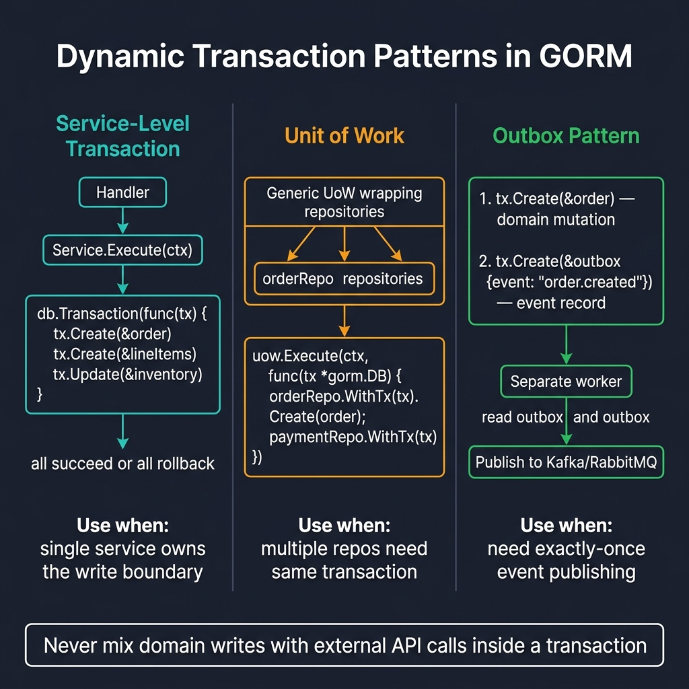
These patterns fail silently without proper safeguards.
| # | Severity | Defect | Fix |
|---|---|---|---|
| 1 | 🔴 FATAL | HTTP/gRPC calls to external services inside a DB transaction | Move all external calls outside the transaction; use outbox pattern for event publishing |
| 2 | 🔴 FATAL | Missing idempotency key on retryable payment endpoints | Add IdempotencyKey with uniqueIndex — DB constraint is the final safety net |
| 3 | 🟡 COMMON | No context timeout on transaction closure | Use db.WithContext(ctx).Transaction() so cancellation propagates to the DB |
| Resource | Link |
|---|---|
| GORM Transactions | https://gorm.io/docs/transactions.html |
| Transactional Outbox Pattern | https://microservices.io/patterns/data/transactional-outbox.html |
With transaction patterns established, scale into distributed coordination.
| Extension | When to proceed | Rationale |
|---|---|---|
| Outbox Worker | When you need reliable event publishing after DB commits | Polls the outbox table and publishes to RabbitMQ/Kafka, solving dual-write |
| Distributed Saga | When a business operation spans multiple services | Orchestrates compensation logic across service boundaries without distributed locks |
---
A read-modify-write loop without locking silently loses updates under concurrency. This article covers pessimistic locking (SELECT ... FOR UPDATE), optimistic locking (version columns), worker job claiming with SKIP LOCKED, and deadlock prevention through consistent lock ordering.
Concurrency Control Usage Models
| Scenario | Purpose |
|---|---|
| Inventory deduction | Prevent oversold conditions mapping strict minimum bounds |
| Balance transfers | Prevent missing update values tracking absolute integrity |
| Queue processing | Prevent duplicate worker tasks executing identical records |
Pessimistic vs Optimistic Logic
| Paradigm | Usage Condition |
|---|---|
Pessimistic (FOR UPDATE) | Processing intense mapped contention limiting conflict tolerance |
| Optimistic (version fields) | Processing marginal contention mapping elevated throughput requirements |
Failure Modes
| Failure | Root Cause | Fix |
|---|---|---|
| Deadlock generation | Routing mapped transaction locks analyzing staggered order constraints | Configure consistent logic mapping lock sort ordering |
| Lost update operations | Processing read-modify-write loops lacking configuration validation structures | Implement FOR UPDATE properties tracking explicit version rules |
| Duplicate worker limits | Routing distinct select tracking condition updates | Execute database claim constraints mapping atomic statements |
Reviewing standard failure models forecasts basic system properties. An implicit trap exists: evaluating read configurations processing subsequent updates triggers race conditions manifesting under elevated pressure loops, while extracting excessive row blocks forces unresolvable deadlock combinations safely.
Mã nguồn & Các ví dụ minh họa
FOR UPDATE targets applying clause.Locking{Strength:"UPDATE"} nested mapping transaction blocks.
Complexity: BasicFOR UPDATE outside a transaction releases the lock instantly before subsequent updates occur, defeating the entire constraint logically.// for_update.go — Lock one row before applying a critical balance update
package ormadvanced
import (
"context"
"fmt"
"gorm.io/gorm"
"gorm.io/gorm/clause"
)
type InventoryItem struct {
ID uint
Quantity int64
}
func ReserveStock(ctx context.Context, db *gorm.DB, itemID uint, amount int64) error {
return db.WithContext(ctx).Transaction(func(tx *gorm.DB) error {
var item InventoryItem
// 1. Establish pessimistic lock preventing concurrent modification
if err := tx.Clauses(clause.Locking{Strength: "UPDATE"}).
First(&item, itemID).Error; err != nil {
return fmt.Errorf("lock inventory row: %w", err)
}
// 2. Evaluate target constraints securely
if item.Quantity < amount {
return fmt.Errorf("insufficient stock")
}
// 3. Mutate specific value mapping isolated updates
return tx.Model(&item).
Update("quantity", item.Quantity-amount).Error
})
}WHERE id=? AND version=?; tracking RowsAffected=0 identifies conflict modifications safely.
Complexity: Intermediate// optimistic_lock.go — Reject conflicting updates when row version has changed
package ormadvanced
import (
"context"
"fmt"
"gorm.io/gorm"
)
type Profile struct {
ID uint
Name string
Version uint
}
func UpdateProfileName(ctx context.Context, db *gorm.DB, id uint, currentVersion uint, newName string) error {
// Execute conditional update asserting exact mapped version limits natively
result := db.WithContext(ctx).
Model(&Profile{}).
Where("id = ? AND version = ?", id, currentVersion).
Updates(map[string]any{
"name": newName,
"version": gorm.Expr("version + 1"), // ← Increment version securely
})
if result.Error != nil {
return fmt.Errorf("update profile: %w", result.Error)
}
// Detect missing modifications exposing concurrent race resolutions accurately
if result.RowsAffected == 0 {
return fmt.Errorf("optimistic lock conflict: version modified currently")
}
return nil
}clause.Locking{Strength: "UPDATE"} selecting specific target arrays ordering items explicitly.
Complexity: Advanced// job_claim.go — Claim one pending job without letting workers grab the same row
package ormadvanced
import (
"context"
"fmt"
"gorm.io/gorm"
"gorm.io/gorm/clause"
)
type Job struct {
ID uint
Status string
}
func ClaimPendingJob(ctx context.Context, db *gorm.DB) (*Job, error) {
var job Job
err := db.WithContext(ctx).Transaction(func(tx *gorm.DB) error {
// Execute explicit row reservations capturing unique queued models
if err := tx.Clauses(clause.Locking{Strength: "UPDATE"}).
Where("status = ?", "pending").
Order("id ASC").
First(&job).Error; err != nil {
return err
}
// Mutate target state routing assignment tracking configurations correctly
if err := tx.Model(&job).Update("status", "processing").Error; err != nil {
return fmt.Errorf("mark job processing: %w", err)
}
return nil
})
if err != nil {
return nil, err
}
return &job, nil
}FOR UPDATE SKIP LOCKED navigating constraints bypassing locked targets.
Complexity: ExpertFOR UPDATE blocking forces N workers evaluating sequentially reducing throughput parameters massively. SKIP LOCKED coordinates multiple queue pullers selecting independent targets simultaneously maximizing concurrent performance safely.// skip_locked_claim.go — Let workers skip locked rows instead of waiting in line
package ormadvanced
import (
"context"
"fmt"
"gorm.io/gorm"
"gorm.io/gorm/clause"
)
type Job struct {
ID uint
Status string
}
func ClaimPendingJobSkipLocked(ctx context.Context, db *gorm.DB) (*Job, error) {
var job Job
err := db.WithContext(ctx).Transaction(func(tx *gorm.DB) error {
// Skip Locked bounds bypass active transactions scanning available items instantly
if err := tx.Clauses(clause.Locking{
Strength: "UPDATE",
Options: "SKIP LOCKED",
}).
Where("status = ?", "pending").
Order("id ASC").
First(&job).Error; err != nil {
return err
}
if err := tx.Model(&job).Update("status", "processing").Error; err != nil {
return fmt.Errorf("mark job processing: %w", err)
}
return nil
})
if err != nil {
return nil, err
}
return &job, nil
}Sơ đồ trực quan & Luồng hoạt động (Visual Support)
Figure: Pessimistic (FOR UPDATE) — TX-B blocks until TX-A commits, use for high contention. Optimistic (version column) — no blocking, TX-B retries on 0 rows affected, use for read-heavy. Comparison: contention, blocking, deadlock risk, retry needs.
Evaluating Row Locking requires tracking timeline behaviors demonstrating sequence ordering boundaries predicting concurrent logic shifts.
``text
Sequence A execution Sequence B transaction
│ │
├── lock target row 10 (FOR UPDATE) ├── wait condition parsing row 10
├── update variable │
└── commit mapping └── route continuous parameter processing immediately
``
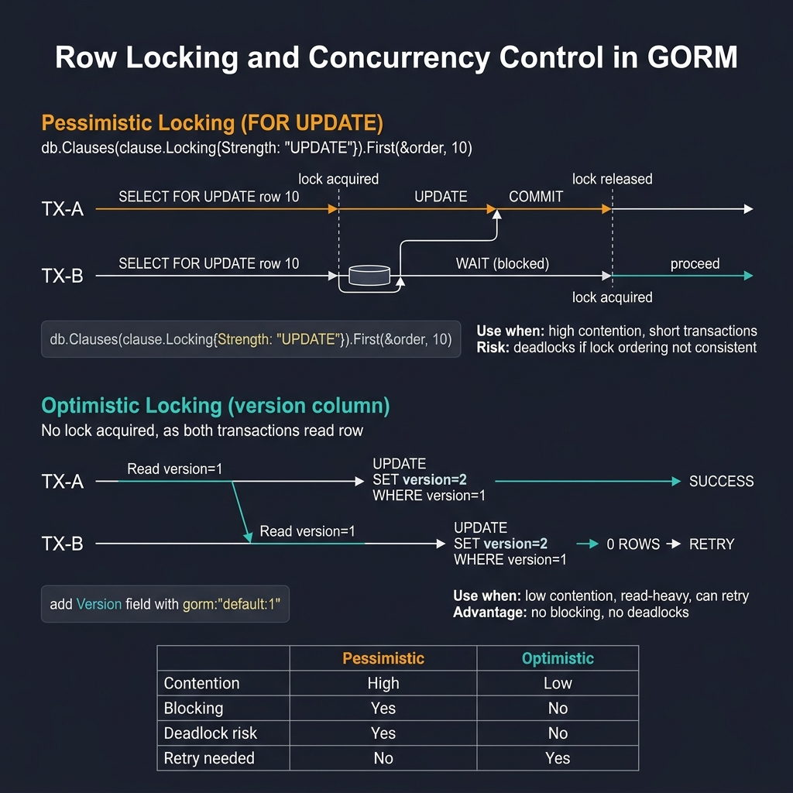
These concurrency bugs only appear under production load.
| # | Severity | Defect | Fix |
|---|---|---|---|
| 1 | 🔴 FATAL | Read-modify-write without row lock | Use FOR UPDATE inside a transaction to serialize access |
| 2 | 🔴 FATAL | Locking rows in random order across transactions | Always lock in consistent ORDER BY id ASC to prevent deadlocks |
| 3 | 🟡 COMMON | Using pessimistic locks for low-contention updates | Switch to optimistic locking (WHERE version = ?) for higher throughput |
| Resource | Link |
|---|---|
| GORM locking | https://gorm.io/docs/advanced_query.html#Locking |
| PostgreSQL row locking | https://www.postgresql.org/docs/current/explicit-locking.html |
With row-level concurrency control in place, scale into distributed patterns.
| Extension | When to proceed | Rationale |
|---|---|---|
| Redis Distributed Locks | When locking spans multiple services or databases | SKIP LOCKED only works within a single PostgreSQL instance |
| Message Queue Workers | When job throughput exceeds DB-based queue capacity | Offload work claiming to RabbitMQ/Kafka for higher parallelism |
---
OFFSET 500000 forces PostgreSQL to scan and discard 500,000 rows before returning the 10 you actually want. This article covers three pagination strategies: basic offset (small tables only), keyset/cursor pagination (O(1) via index seek), and FindInBatches for memory-safe bulk processing of large exports.
Pagination Abstraction Models
| Paradigm | Trade-Off Configuration |
|---|---|
| Offset structures | Simplifies queries matching minor limits tracking severe performance degradation across deep skips. |
| Keyset cursors | Stabilizes query times limiting arbitrary page navigation requirements scaling infinitely. |
| Batch processing | Optimizes export pipelines masking memory allocations preventing standard client pagination exhaustion. |
Failure Modes
| Failure | Root Cause | Fix |
|---|---|---|
| Latency boundaries | Parsing extreme offset conditions skipping unrendered results unnecessarily. | Execute keyset constraints bypassing offset loops completely. |
| Asymmetric row logic | Processing unstable record indexing causing pagination shifting arrays. | Implement unique ordering variables ensuring deterministic mapping bounds reliably. |
| Memory extraction crashes | Loading complete dataset tables within limited memory boundaries. | Configure targeted streaming extraction loops parsing batch boundaries safely. |
Reviewing standard failure modes predicts basic errors. A fatal operational trap exists: defining sorts omitting unique identification strings causes duplicate record shifting across page arrays, and injecting extreme offset parameters triggers unoptimized sequential map scans automatically.
Mã nguồn & Các ví dụ minh họa
// offset_pagination.go — Simple pagination suitable only for small or low-depth result sets
package ormadvanced
import "gorm.io/gorm"
type Customer struct {
ID uint
Email string
}
func ListCustomersOffset(db *gorm.DB, page int, size int) ([]Customer, error) {
var customers []Customer
// Execute standard offset extraction sorting deterministic identifiers natively
err := db.Order("id ASC").
Offset((page - 1) * size).
Limit(size).
Find(&customers).Error
return customers, err
}WHERE id > ? conditions tracking execution index pointers precisely.
Complexity: IntermediateOFFSET 500000 instructs the database engine extracting and discarding 500,000 rows sequentially before returning the target 10 rows. WHERE id > 500000 navigates the B-Tree index structure identifying the exact starting node instantly.// keyset_pagination.go — Page by last seen ID for better performance on large tables
package ormadvanced
import "gorm.io/gorm"
type Customer struct {
ID uint
Email string
}
func ListCustomersAfterID(db *gorm.DB, lastSeenID uint, size int) ([]Customer, error) {
var customers []Customer
query := db.Order("id ASC").Limit(size)
// Configure keyset boundaries restricting target scans matching index definitions exactly
if lastSeenID > 0 {
query = query.Where("id > ?", lastSeenID)
}
err := query.Find(&customers).Error
return customers, err
}FindInBatches separating evaluation chunk sizes perfectly.
Complexity: AdvancedFindInBatches configures the primary key targeting iteration internally guaranteeing perfect keyset cursor performance automatically.// batch_reader.go — Iterate large datasets in chunks without loading all rows at once
package ormadvanced
import (
"context"
"fmt"
"log"
"gorm.io/gorm"
)
type Customer struct {
ID uint
Email string
}
func ProcessCustomersInBatches(ctx context.Context, db *gorm.DB, batchSize int, fn func([]Customer) error) error {
// Utilize FindInBatches loading defined chunks preventing massive RAM allocation native crashes
return db.WithContext(ctx).Order("id ASC").
FindInBatches(&[]Customer{}, batchSize, func(tx *gorm.DB, batch int) error {
// Extract batch elements securely mapping function closure logics
customers := *tx.Statement.Dest.(*[]Customer)
if err := fn(customers); err != nil {
log.Printf("Batch %d extraction failed completely", batch)
return fmt.Errorf("process batch %d: %w", batch, err)
}
return nil
}).Error
}Cursor{LastID} parameters cleanly.
Complexity: Expertlast_id=150 tightly couples API clients predicting internal database schemas rigidly. An opaque token eyJsYXN0X2lkIjoxNTB9 enables backend logic switching complex multi-column sorting parameters natively without breaking existing frontend implementation mappings.// cursor_token.go — Encode a simple keyset cursor for API consumers
package ormadvanced
import (
"encoding/base64"
"encoding/json"
)
type Cursor struct {
LastID uint `json:"last_id"`
}
// EncodeCursor generates opaque API tokens hiding internal sorting logic sequences cleanly.
func EncodeCursor(lastID uint) (string, error) {
payload, err := json.Marshal(Cursor{LastID: lastID})
if err != nil {
return "", err
}
// Apply RawURLEncoding producing web-safe token properties instantly
return base64.RawURLEncoding.EncodeToString(payload), nil
}
// DecodeCursor validates opaque tokens recovering actual mapping query configurations properly.
func DecodeCursor(token string) (Cursor, error) {
raw, err := base64.RawURLEncoding.DecodeString(token)
if err != nil {
return Cursor{}, err
}
var cursor Cursor
if err := json.Unmarshal(raw, &cursor); err != nil {
return Cursor{}, err
}
return cursor, nil
}Sơ đồ trực quan & Luồng hoạt động (Visual Support)
Figure: Offset/Limit degrades O(N) as page increases — avoid for large datasets. Keyset (cursor) pagination is O(1) using index scan. FindInBatches processes records in bounded chunks for migrations, reports, background jobs.
Evaluating Large Pagination & Batch Processing demands tracking functional logic modeling distinct parameter sequences capturing specific variable conditions natively.
``text
Offset limit loops (O(N) degradation)
page 1 -> skip 0 -> read 50 rows (fast)
page 2 -> skip 50 -> read 50 rows (fast)
page N -> skip 500k -> sequentially scan 500k rows, render 50 rows (timeout)
Deterministic keyset loops (O(1) stability) lastseenid = 120 │ ▼ WHERE id > 120 ORDER BY id ASC LIMIT 50 (index scan executes instantly) ``
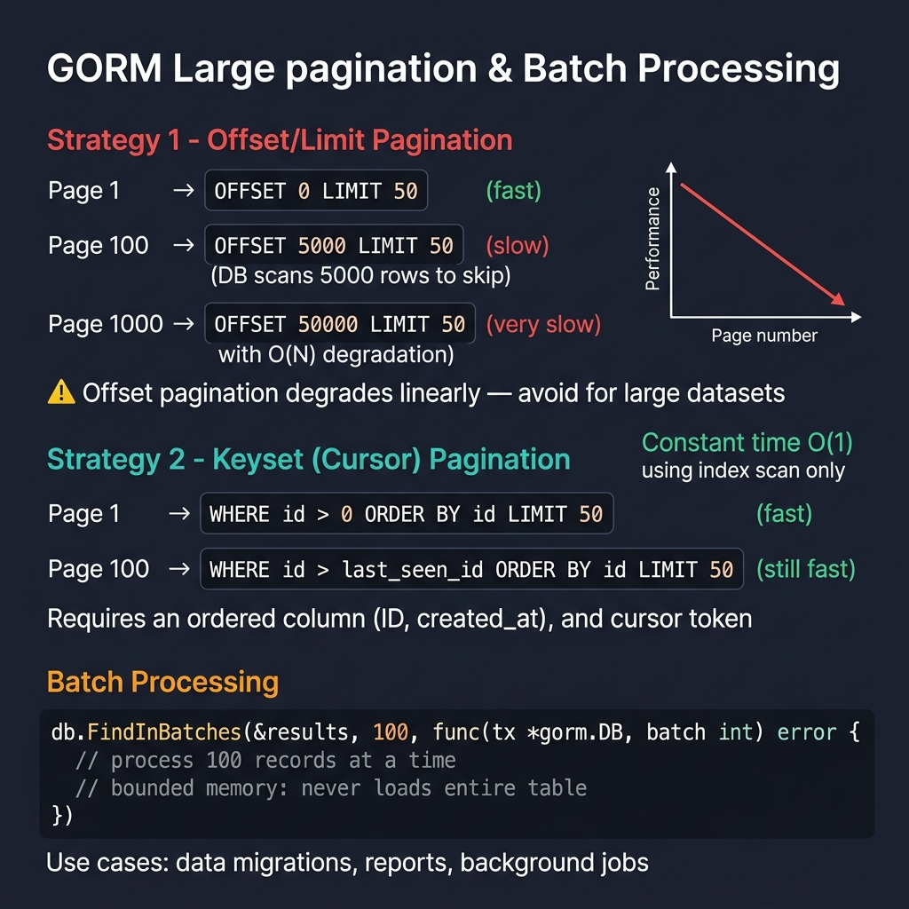
These patterns fail silently in development and explode at scale.
| # | Severity | Defect | Fix |
|---|---|---|---|
| 1 | 🔴 FATAL | Loading entire tables with Find() for background exports | Use FindInBatches() to process in chunks and cap RAM usage |
| 2 | 🔴 FATAL | Using OFFSET for deep pagination (page 10,000+) | Switch to keyset pagination: WHERE id > lastseenid |
| 3 | 🟡 COMMON | Sorting by non-unique column in cursor pagination | Add a unique tiebreaker: ORDER BY created_at DESC, id DESC |
| Resource | Link |
|---|---|
| GORM Batch Query | https://gorm.io/docs/advanced_query.html#FindInBatches |
| Keyset Pagination | https://use-the-index-luke.com/no-offset |
With pagination patterns established, extend into API design and search.
| Extension | When to proceed | Rationale |
|---|---|---|
| Cursor-Based API Endpoints | When building mobile infinite-scroll UIs | Opaque cursor tokens hide internal sort logic and survive concurrent inserts |
| Elasticsearch Integration | When relational LIKE/fulltext search becomes a bottleneck | Offload complex search to a dedicated indexing engine |
---
A missing WHERE tenantid = ? clause serves one customer’s confidential data to a competing organization. This article covers the shared-table pattern with GORM Scopes, mandatory tenant-scoped repositories, composite unique constraints, and carrying tenant identity through async job payloads.
Multi-tenant Architectural Models
| Architecture | Use Case |
|---|---|
Shared tables with tenantid | Maps standard integrations maintaining optimal cost configurations matching standard scalability natively. |
| Schema per tenant | Defines robust isolation limits introducing elevated operational complexity managing continuous database migrations. |
| Database per tenant | Configures absolute isolation mapping extreme infrastructure costs explicitly demanded by enterprise compliance securely. |
Architecture Invariants
| Rule | Impact |
|---|---|
Bind query loops executing tenantid | Restricts information mapping generating cross-tenant data leaks completely. |
| Target tenant scopes defining repository elements | Resolves unmapped filters bypassing handler configurations safely. |
| Isolate distinct admin query properties | Prevents structural scope bypass errors executing global aggregations strictly. |
Failure Modes
| Failure | Root Cause | Fix |
|---|---|---|
| Data leakage loops | Omitting WHERE tenantid = ? filter components evaluating specific domain targets. | Format bound repository guard mapping explicit schema logic natively. |
| Performance index failures | Missing mapped composite index properties checking tenant bounds sequentially. | Configure index constraints predicting (tenantid, businesskey) parameters correctly. |
| Unmapped background workers | Formatting execution contexts lacking distinct tenant properties completely. | Extract explicit tenant parameter values evaluating inbound execution payloads. |
Reviewing standard failure models forecasts basic system properties. An implicit trap exists: determining handler mappings omitting tenant filters causes cross-tenant configuration leaks instantly, and deploying schemas lacking composite indexes collapses query performance scaling massive arrays.
Mã nguồn & Các ví dụ minh họa
Scopes(ScopeTenant(...)) constraints replacing hardcoded tenantid = ? query fragments distributed completely across codebase components.
Complexity: Basic.Where("tenantid = ?", id) repeatedly guarantees human error omissions causing data leaks eventually. Scopes enforce central logic configurations parsing updates reliably across completely unified constraints.// tenant_scope.go — Apply tenant filter centrally instead of repeating it by hand
package ormadvanced
import "gorm.io/gorm"
type Invoice struct {
ID uint
TenantID string `gorm:"index"`
Amount int64
}
// ScopeTenant defines reusable boundaries capturing exact logic parameters securely.
func ScopeTenant(tenantID string) func(*gorm.DB) *gorm.DB {
return func(db *gorm.DB) *gorm.DB {
return db.Where("tenant_id = ?", tenantID)
}
}tenantID string struct parameters bounding repository methods executing Scopes natively.
Complexity: Intermediate// tenant_repository.go — Force tenant scoping inside repository methods
package ormadvanced
import (
"context"
"gorm.io/gorm"
)
type Invoice struct {
ID uint
TenantID string
Amount int64
}
func ScopeTenant(tenantID string) func(*gorm.DB) *gorm.DB {
return func(db *gorm.DB) *gorm.DB {
return db.Where("tenant_id = ?", tenantID)
}
}
type InvoiceRepository struct {
db *gorm.DB
}
// ListByTenant executes parameter mappings requiring tenant scopes explicitly.
func (r *InvoiceRepository) ListByTenant(ctx context.Context, tenantID string) ([]Invoice, error) {
var invoices []Invoice
// Execute boundary limits injecting standard scopes confidently
err := r.db.WithContext(ctx).
Scopes(ScopeTenant(tenantID)).
Order("id DESC").
Find(&invoices).Error
return invoices, err
}Scopes encapsulating natural external keys safely.
Complexity: Advancedexternalid (e.g., "INV-001"); omitting tenant boundaries returns incorrect corporate data violently.// tenant_lookup.go — Combine tenant scope with business lookup keys safely
package ormadvanced
import (
"context"
"fmt"
"gorm.io/gorm"
)
type Invoice struct {
ID uint
TenantID string
ExternalID string
Amount int64
}
func ScopeTenant(tenantID string) func(*gorm.DB) *gorm.DB {
return func(db *gorm.DB) *gorm.DB {
return db.Where("tenant_id = ?", tenantID)
}
}
func FindInvoiceByExternalID(ctx context.Context, db *gorm.DB, tenantID string, externalID string) (*Invoice, error) {
var invoice Invoice
// Combine parameters evaluating specific properties isolating identical ExternalIDs securely
if err := db.WithContext(ctx).
Scopes(ScopeTenant(tenantID)).
Where("external_id = ?", externalID).
First(&invoice).Error; err != nil {
return nil, fmt.Errorf("find invoice: %w", err)
}
return &invoice, nil
}TenantID payloads matching external background task configurations executing distinct contextual lookups cleanly.
Complexity: Expert// tenant_job.go — Carry tenant identity explicitly in async job payloads
package ormadvanced
import "context"
type Invoice struct {
ID uint
TenantID string
ExternalID string
}
// TenantJobPayload defines serialized configuration structures storing tenant limits explicitly.
type TenantJobPayload struct {
TenantID string
ExternalID string
}
type TenantAwareInvoiceRepository interface {
FindInvoiceByExternalID(ctx context.Context, tenantID string, externalID string) (*Invoice, error)
}
func HandleTenantInvoiceSync(
ctx context.Context,
repo TenantAwareInvoiceRepository,
payload TenantJobPayload,
) (*Invoice, error) {
// Extract background context tracking limits configuring exact domain mappings
return repo.FindInvoiceByExternalID(ctx, payload.TenantID, payload.ExternalID)
}Sơ đồ trực quan & Luồng hoạt động (Visual Support)
Figure: Three isolation strategies — Shared Table (tenantid column, simple, data leak risk), Schema Per Tenant (logical isolation, migration per tenant), Database Per Tenant (strongest isolation, connection explosion). Decision: >1000 tenants → shared, <100 → schema, <10 strict → database.
Evaluating Multi-tenant Patterns demands tracking functional logic modeling distinct parameter sequences capturing specific variable conditions resolving mapping scopes reliably.
``text
Incoming Request Loop (API Layer)
│ 1. HTTP Middleware extracts tenantid from JWT/Header
│ 2. Middleware injects context.WithValue(ctx, "tenant", "acme")
▼
Service Logic Boundary
│ 3. Service extracts tenant mapping constraints explicitly
▼
Repository Filter Scopes (Database Layer)
│ 4. Applies mandatory WHERE tenant_id = ? condition properties
▼
Tenant-Safe Persistence Queries executing isolated arrays safely.
``
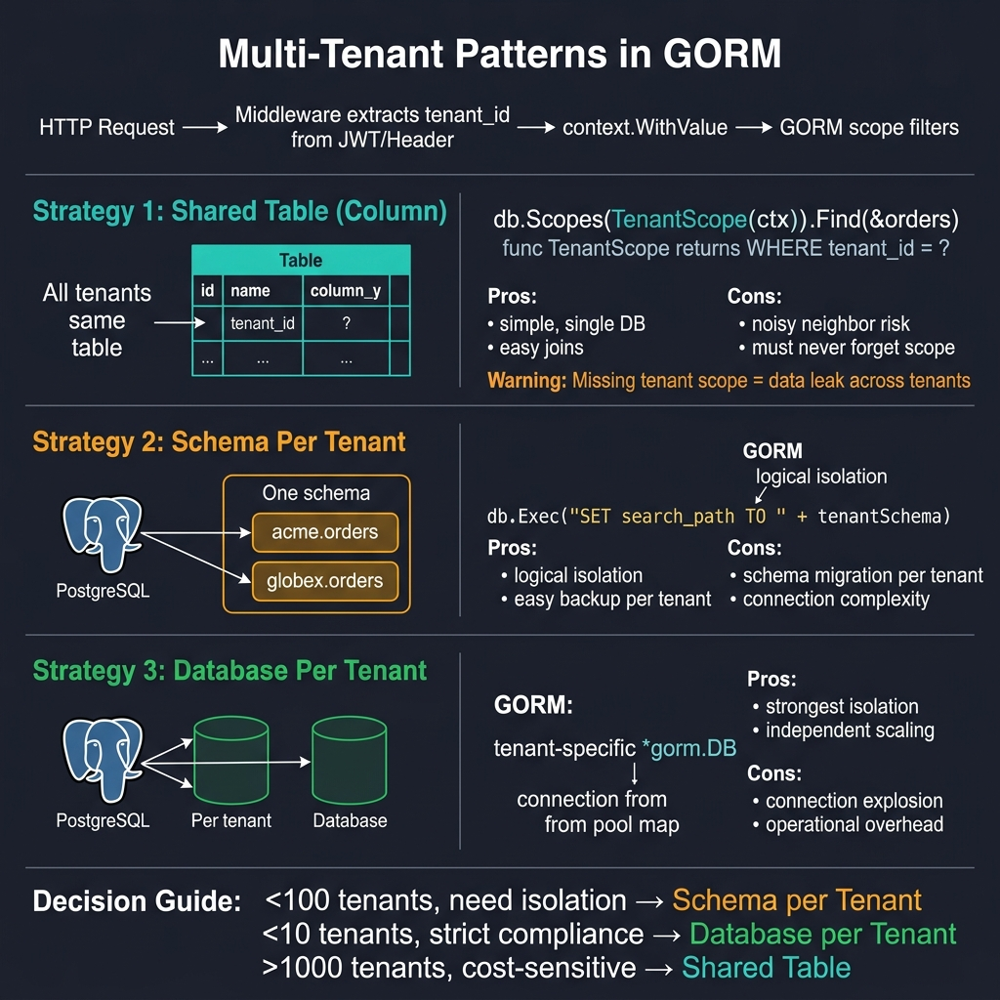
Tenant leaks are silent, catastrophic, and legally actionable.
| # | Severity | Defect | Fix |
|---|---|---|---|
| 1 | 🔴 FATAL | Queries missing tenant filter | Use Scopes(ScopeTenant(id)) on every repository method |
| 2 | 🔴 FATAL | Unique constraints without tenant column | Use composite: UNIQUE(tenantid, businesskey) |
| 3 | 🟡 COMMON | Cache keys without tenant prefix | Prefix all cache keys: {tenant}:{entity}:{id} |
| Resource | Link |
|---|---|
| GORM scopes | https://gorm.io/docs/scopes.html |
| Multi-tenant data isolation patterns | https://learn.microsoft.com/en-us/azure/architecture/guide/multitenant/considerations/data-isolation |
With application-level tenant isolation in place, evaluate database-level options.
| Extension | When to proceed | Rationale |
|---|---|---|
| Schema-per-Tenant | When enterprise compliance demands physical isolation | Separate PostgreSQL schemas per tenant with dynamic search_path |
| Row-Level Security (RLS) | When you want DB-enforced isolation as a safety net | PostgreSQL RLS policies block cross-tenant queries even if app code forgets the filter |
---
Running analytics queries on the primary database blocks payment mutations waiting behind the same connection pool. This article covers explicit read/write connection splitting, sticky-read semantics to handle replication lag, and ReadConsistency enums that force callers to declare their freshness requirements.
Connection Splitting Scenarios
| Concern | Purpose |
|---|---|
| Primary limits | Offloads analytic query loads shielding operational mutation paths completely. |
| Read scaling | Extends capacity routing unbounded replica clusters handling traffic securely. |
| Workload isolation | Dedicates background processing limits extracting massive domain exports natively. |
Failure Modes
| Failure | Root Cause | Fix |
|---|---|---|
| Stale validation | Reading replica logic resolving trailing replication windows immediately after writes. | Configure sticky session structures targeting primary connections matching trailing windows exactly. |
| Silent drift | Masking lag metrics bypassing operational alert bounds entirely. | Structure observability metrics tracking sync delay parameters executing automated alerts continuously. |
| Routing faults | Emitting write logic targeting replica databases accidentally. | Enforce connection routing boundaries mapping strict interface variables segregating endpoints. |
Reviewing standard failure modes forecasts basic errors. A fatal operational trap exists: combining connection parameters forces implicit routing resolving read-your-own-write anomalies incorrectly, and executing complex queries against primary nodes consumes locking capabilities terminating transaction availability.
Mã nguồn & Các ví dụ minh họa
Store{Writer, Reader} structs encapsulating specific *gorm.DB parameters formatting explicit capabilities.
Complexity: Basic// split_handles.go — Keep separate GORM handles for write-primary and read-replica traffic
package ormadvanced
import "gorm.io/gorm"
// Store separates primary limits configuring replica boundaries explicitly.
type Store struct {
Writer *gorm.DB
Reader *gorm.DB
}r.store.Writer evaluating creates matching r.store.Reader processing standard searches cleanly.
Complexity: Intermediate// repository_split.go — Route writes to primary and non-critical reads to replica
package ormadvanced
import (
"context"
"fmt"
"gorm.io/gorm"
)
type User struct {
ID uint
Email string
}
type Store struct {
Writer *gorm.DB
Reader *gorm.DB
}
type UserRepository struct {
store Store
}
// Create routes domain mutations targeting primary connection boundaries strictly.
func (r *UserRepository) Create(ctx context.Context, user *User) error {
return r.store.Writer.WithContext(ctx).Create(user).Error
}
// FindByIDReplica distributes read traffic querying replica parameters natively.
func (r *UserRepository) FindByIDReplica(ctx context.Context, id uint) (*User, error) {
var user User
if err := r.store.Reader.WithContext(ctx).First(&user, id).Error; err != nil {
return nil, fmt.Errorf("find user replica: %w", err)
}
return &user, nil
}
// FindByIDPrimary resolves critical read definitions extracting fresh limits reliably.
func (r *UserRepository) FindByIDPrimary(ctx context.Context, id uint) (*User, error) {
var user User
if err := r.store.Writer.WithContext(ctx).First(&user, id).Error; err != nil {
return nil, fmt.Errorf("find user primary: %w", err)
}
return &user, nil
}ReadConsistency enum values executing dynamic connection parameters enforcing boundaries flawlessly.
Complexity: Advancedtrue/false) lack context obscuring semantic intentions permanently. Explicit ReadFromReplica enumerations guarantee codebase readability preventing mistaken parameter placements reliably.// read_your_write.go — Force a primary read when the caller requires freshest state
package ormadvanced
import "context"
type ReadConsistency string
const (
ReadFromReplica ReadConsistency = "replica"
ReadFromPrimary ReadConsistency = "primary"
)
// FindByID executes configured enum limits demanding connection awareness natively.
func (r *UserRepository) FindByID(ctx context.Context, id uint, consistency ReadConsistency) (*User, error) {
// Evaluate explicit consistency enumerations resolving primary boundaries reliably.
if consistency == ReadFromPrimary {
return r.FindByIDPrimary(ctx, id)
}
// Default queries offload traffic evaluating identical replica properties strictly.
return r.FindByIDReplica(ctx, id)
}WithinWindow parameters precisely.
Complexity: Expert// stickiness_window.go — Keep critical reads on primary for a short time after a write
package ormadvanced
import "time"
// ReadPolicy defines tracking boundaries identifying recent state mutations accurately.
type ReadPolicy struct {
LastWriteAt time.Time
Window time.Duration
}
// Consistency evaluates current time variables mapping strict parameter windows reliably.
func (p ReadPolicy) Consistency(now time.Time) ReadConsistency {
// Fall back mapping primary components whenever tracking boundaries hit trailing lag limits.
if !p.LastWriteAt.IsZero() && now.Sub(p.LastWriteAt) <= p.Window {
return ReadFromPrimary
}
return ReadFromReplica
}Sơ đồ trực quan & Luồng hoạt động (Visual Support)
Figure: DBResolver routes writes to Primary, reads to Replicas (load balanced). Sticky Read pattern forces post-write reads to Primary to avoid stale data from replication lag. db.Clauses(dbresolver.Write) forces Primary.
Evaluating Read/Write Splitting demands tracking functional routing configurations distributing workload parameters optimizing performance capacities natively.
``text
Database Connection Manager
│
├── Writer Target (Primary)
│ └── Serves strict domain mutations reliably.
│ └── Evaluates critical sticky read conditions perfectly.
│
└── Reader Target (Replica Array)
└── Serves distributed analytic query loads extensively.
└── Accepts delayed consistency structures natively.
``
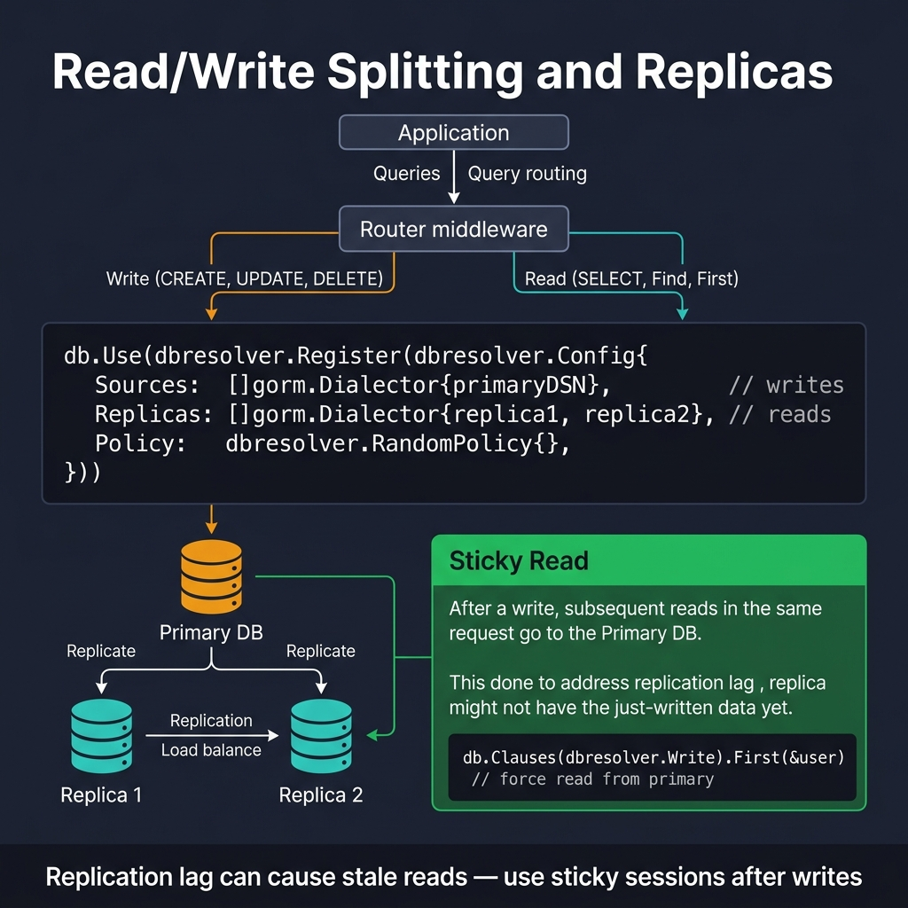
Replica routing errors are invisible until a user reports stale data.
| # | Severity | Defect | Fix |
|---|---|---|---|
| 1 | 🔴 FATAL | Reading from replica immediately after a write (stale data shown to user) | Implement ReadPolicy with a 5-second sticky window to primary |
| 2 | 🔴 FATAL | Running heavy GROUP BY analytics on the primary database | Route analytics to read replicas to protect write throughput |
| 3 | 🟡 COMMON | No alerting on replication lag | Set CloudWatch/Prometheus alerts when replica lag exceeds threshold |
| Resource | Link |
|---|---|
| GORM DB Resolver | https://gorm.io/docs/dbresolver.html |
| Read replica consistency patterns | https://www.cockroachlabs.com/blog/follower-reads-stale-data/ |
With split connections established, add caching and automation.
| Extension | When to proceed | Rationale |
|---|---|---|
| GORM DBResolver Plugin | When managing dozens of replica connections manually becomes unwieldy | Automates read/write routing based on query type |
| Redis Cache-Aside | When hot-path reads hammer replicas despite splitting | Serve scalar lookups from Redis, dropping DB reads entirely |
---
GORM hides the SQL it generates. Without explicit logging, slow-query tracing, and connection pool metrics, N+1 loops and unbounded connections silently degrade until the database crashes. This article covers GORM logger configuration, selective column loading, connection pool tuning, and Prometheus histogram instrumentation.
Orchestrating Tuning Targets
| Target Metric | Observability Goal |
|---|---|
| Generated query shapes | Exposes raw string executions decoupling hidden ORM mapping abstractions exactly. |
| Query multiplicity logic | Detects nested iterations triggering silent N+1 load cascading conditions. |
| Connection configurations | Identifies strict exhaustion parameters limiting connection scaling capabilities cleanly. |
| Index hit validations | Evaluates scan bounds checking sequential table iterations using EXPLAIN plans natively. |
Failure Modes
| Failure | Root Cause | Fix |
|---|---|---|
| Invisible load saturation | Masking execution times bypassing logging configurations completely. | Construct slow query trace metrics targeting static threshold boundaries aggressively. |
| Cascading N+1 iterations | Omitting explicit Preload configurations rendering associated child elements sequentially. | Emplace strict graph components defining isolated array preload limits preemptively. |
| Connection exhaustion | Omitting explicit SetMaxOpenConns constraints opening infinite database tracking sockets. | Configure bounded connection parameters mapping exact concurrent CPU scaling architectures. |
Reviewing standard failure models forecasts basic system properties. An implicit trap exists: evaluating graph components loading complete association boundaries (Select *) consumes extreme memory capacities, and leaving connection pools unbounded triggers memory exhaustion collapsing database nodes abruptly.
Mã nguồn & Các ví dụ minh họa
logger.Config parameters assigning specific SlowThreshold tracking rules evaluating strings cleanly.
Complexity: BasicFirst() execute naturally during validation handling limits routinely. Logging 404 queries as database errors generates massive false-positive alerts masking actual performance degradation problems completely.// gorm_logger.go — Surface slow queries without drowning production logs
package ormadvanced
import (
"log"
"os"
"time"
"gorm.io/gorm/logger"
)
// NewGORMLogger determines operational thresholds tracking slow components gracefully.
func NewGORMLogger() logger.Interface {
return logger.New(
log.New(os.Stdout, "\r\n", log.LstdFlags),
logger.Config{
SlowThreshold: 200 * time.Millisecond,
LogLevel: logger.Warn,
IgnoreRecordNotFoundError: true,
Colorful: false,
},
)
}SELECT * allocations safely.
Approach: Configure explicit Select() parameters combining Preload configurations tracking constrained variables identically.
Complexity: Intermediate// preload_tuning.go — Fetch only required columns and relations for listing endpoints
package ormadvanced
import "gorm.io/gorm"
type User struct {
ID uint
Email string
}
type Order struct {
ID uint
UserID uint
Amount int64
User User
}
// ListOrdersForAdmin optimizes network payloads selecting exact target identifiers specifically.
func ListOrdersForAdmin(db *gorm.DB) ([]Order, error) {
var orders []Order
err := db.Select("id", "user_id", "amount").
Preload("User", func(tx *gorm.DB) *gorm.DB {
// Constrain associated entity extractions executing nested Select clauses reliably.
return tx.Select("id", "email")
}).
Order("id DESC").
Limit(100).
Find(&orders).Error
return orders, err
}sql.DB rules setting MaxOpenConns tracking fixed hardware parameters properly.
Complexity: Advanced// pool_tuning.go — Tune database/sql pool behind Gorm explicitly
package ormadvanced
import (
"fmt"
"time"
"gorm.io/gorm"
)
// TunePool structures connection variables preventing node capacity exhaustion firmly.
func TunePool(db *gorm.DB, maxOpen int, maxIdle int) error {
sqlDB, err := db.DB()
if err != nil {
return fmt.Errorf("get sql db limits: %w", err)
}
// Identify strict socket bounds evaluating concurrent processing logic directly.
sqlDB.SetMaxOpenConns(maxOpen)
sqlDB.SetMaxIdleConns(maxIdle)
sqlDB.SetConnMaxLifetime(5 * time.Minute)
sqlDB.SetConnMaxIdleTime(1 * time.Minute)
return nil
}// query_metrics.go — Record query duration per repository operation
package ormadvanced
import (
"time"
"github.com/prometheus/client_golang/prometheus"
)
var queryDuration = prometheus.NewHistogramVec(
prometheus.HistogramOpts{
Name: "gorm_query_duration_seconds",
Help: "Duration of ORM repository operations parsing specific sequences.",
Buckets: []float64{0.01, 0.05, 0.1, 0.2, 0.5, 1, 2},
},
[]string{"operation"},
)
// ObserveQuery records timing configurations tracking exact domain target queries cleanly.
func ObserveQuery(operation string, fn func() error) error {
start := time.Now()
err := fn()
// Export timing variables calculating precise boundaries detecting latency spikes reliably.
queryDuration.WithLabelValues(operation).Observe(time.Since(start).Seconds())
return err
}Sơ đồ trực quan & Luồng hoạt động (Visual Support)
Figure: Diagnostic pipeline — N+1 detection (Preload fixes), slow query logging (logger.Warn threshold), connection pool monitoring (sqlDB.Stats WaitCount), optimization checklist (Select, Preload, FindInBatches, indexes, PrepareStmt).
Evaluating Query Observability demands extracting hidden ORM processes mapping string generation paths confirming exact sequential behaviors securely.
``text
Domain Logic Triggers
│
▼
ORM Execution Generation
│
├── Diagnostic Logging Interception (Slow logs > 200ms)
├── Query Shape Optimization (Preloads & Selects)
└── Connection Bounds Validation (MaxOpen = 50)
│
▼
Optimized Output generating predictable load profiles natively.
``
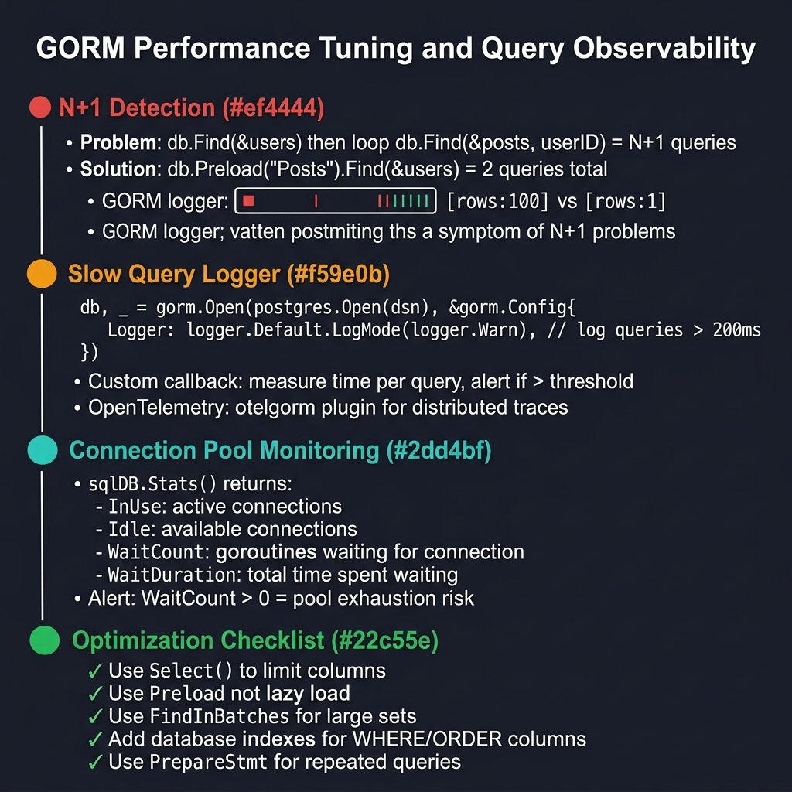
These performance issues are invisible without instrumentation.
| # | Severity | Defect | Fix |
|---|---|---|---|
| 1 | 🔴 FATAL | No SetMaxOpenConns — Go opens unlimited DB connections | Set SetMaxOpenConns(50) to match your DB’s max_connections budget |
| 2 | 🔴 FATAL | N+1 queries from missing Preload | Add Preload("Relation") to batch child queries into a single IN (ids) |
| 3 | 🟡 COMMON | SELECT * on tables with large text/JSON columns | Use Select("id", "status") to fetch only needed columns |
| Resource | Link |
|---|---|
| GORM performance tips | https://gorm.io/docs/performance.html |
| GORM logger | https://gorm.io/docs/logger.html |
| PostgreSQL EXPLAIN | https://www.postgresql.org/docs/current/using-explain.html |
With basic observability in place, go deeper into distributed tracing.
| Extension | When to proceed | Rationale |
|---|---|---|
| OpenTelemetry Integration | When you need end-to-end trace correlation across services | Injects trace IDs into DB queries, correlating HTTP spans with SQL execution |
| Automated EXPLAIN Plans | When slow-query logs identify suspects but not root causes | Run EXPLAIN ANALYZE on flagged queries to find missing indexes |
---